The purpose of this project is to explain which characteristics are associated with entry into distinct workforce participation pathways following high school graduation in Southwest Minnesota (EDR 6W, 6E and 8). These pathways include sustained employment in the region, sustained employment elsewhere in Minnesota, non-sustained employment, and having no Minnesota employment record.
The policy question of greatest interest is what factors are associated with sustained employment in the region. Earlier analysis relied on bivariate analyses (cross-tabulations, Cramér’s V, and ANOVA) to identify patterns of stratification across workforce participation outcomes. A consistent finding was that postsecondary experiences—particularly credential attainment and where education was completed—are strongly associated with long-term workforce attachment. Academic preparation, early college exposure (PSEO), career and technical education (CTE), and structural demographic factors also demonstrated meaningful relationships.
To strengthen confidence in these findings, a limited multivariate analysis is conducted using logistic regression. The purpose of this modeling is not to establish causality or build a predictive tool, but to examine whether the strongest bivariate relationships remain directionally consistent when key variables are considered simultaneously. This approach helps clarify whether preparation variables retain independent associations after accounting for credential attainment, and whether regional postsecondary completion remains influential when controlling for background and readiness.
Logistic regression is used here as a confirmatory tool rather than the primary analytic framework.
Methodology
Outcome Variable 1
The first modeling will focus on the workforce participation outcomes.
Sustained employment – region (binary outcome)
The dependent variable is coded as:
1 = Sustained employment – region
0 = All other workforce outcomes (including sustained employment – MN outside the region, non-sustained employment, and no MN employment record)
For the grad.year.x, I’m categorizing the workforce participation outcomes at 5 years after high school. I will be eliminating any individual with the following categories at grad.year.5;
“Attending ps”
“After 2023”
Outcome Variable 2
Completed some form of post-secondary credential
The dependent variable is coded as:
1 = completed college
2 = did not complete college.
I will be eliminating individuals with the following categories under ps.grad;
“Attending ps”
Independent Variables
To maintain interpretability and avoid overfitting, the analysis includes a limited set of theoretically and empirically important predictors identified in earlier analyses. We are going to explore the results of a baseline model and than add more independent variables in stages to see if the model improves. This will help us decipher how each variable impacts / improves predictability and strength of association. Here is how we will add them;
Block 1 - Demographics
Gender
RaceEthnicty
economic.status
SpecialEdStatus
englisher.learner
Block 2 - High school characteristics and labor market
edr
avg.unemployment.rate
Block 3 - High school accomplishments
took.ACT
ap.exam
cte.achievement
MCA.R
Block 4 - Post-secondary
For this block I’m going to create a new variable due to likely collinearity. I will use the following variables;
highest.cred.level
ps.grad.location
From these two I’m going to create a new variable;
ps.pathway
Did not graduate ps — the direct workforce entry pathway
Sub-baccalaureate - region — shorter credential, stayed local
Sub-baccalaureate - MN — shorter credential, left region but stayed in state
Sub-baccalaureate - outside MN — shorter credential, left state
Bachelor or higher - region — higher credential, stayed local
Bachelor or higher - MN — higher credential, left region but stayed in state
Bachelor or higher - outside MN — higher credential, left state
Variables were selected based on:
1. Strength of association in prior bivariate analyses
2. Policy relevance
3. Conceptual clarity
4. Avoidance of redundant or highly collinear measures
Analysis Approach
This multivariate analysis is structured as a series of theoretically guided hierarchical logistic regression models designed to evaluate mechanisms associated with sustained regional employment. The goal is confirmatory testing of previously observed patterns rather than prediction or causal inference.
The dependent variable is a binary indicator of Sustained employment – region (1 = sustained employment in the region; 0 = all other workforce outcomes). All models are estimated at five years post-graduation.
Model Structure
Variables are entered in four theoretically sequenced blocks, each corresponding to a distinct stage of the pathway from high school graduation to regional workforce participation. This hierarchical structure directly mirrors the sorting process identified in the descriptive analysis — who individuals are shapes what they do in high school, which shapes their postsecondary pathway, which shapes where they ultimately work.
Each block is added sequentially, producing four nested models. At each stage, the new block is evaluated for whether it adds statistically significant explanatory power beyond the variables already in the model.
Evaluation Criteria
Results will be reported using odds ratios, 95% confidence intervals, statistical significance levels, and directional interpretation. The following model comparison metrics will be reported at each block entry:
Change in -2 log likelihood with associated chi-square test and degrees of freedom, directly testing whether each new block adds statistically significant explanatory power beyond the previous model
Nagelkerke R² and change in Nagelkerke R², providing an interpretable measure of the variance explained by each successive block
AIC, used to assess relative model fit across specifications
Variance inflation factors (VIF) will be reported to assess multicollinearity among predictors. Emphasis will remain on coefficient stability, attenuation patterns, and substantive interpretation rather than overall fit.
Interpretation Framework
Interpretation will focus on the direction and relative magnitude of associations, changes in coefficients across models, and evidence of attenuation when postsecondary variables are introduced in Block 4. Findings will be described as associations holding other included variables constant. No causal claims will be made.
This structured approach evaluates three central mechanisms underlying sustained regional employment in Southwest Minnesota:
Preparation Sorting Mechanism — the role of academic readiness, early college exposure, and technical pathways in shaping workforce location outcomes (Blocks 2 and 3)
Credential Stratification Mechanism — the role of postsecondary attainment depth in mediating earlier associations (Block 4)
Regional Anchoring Mechanism — the role of postsecondary graduation location as the most proximal predictor of regional workforce retention (Block 4)
Together, these models provide multivariate confirmation of patterns identified in the earlier descriptive analyses while preserving conceptual clarity and interpretability. Attenuation of Block 1 and Block 3 coefficients following the introduction of Block 4 will be of particular substantive interest, as it will indicate the degree to which postsecondary pathway mediates the effects of demographic characteristics and high school preparation on regional workforce retention.
Prep workforce participation outcomes data
The first thing I need to do is setup my dataset for modeling. I’m going to create the workforce participation into a binary and will use grad.year.5 as my modeling year.
master.model <- master %>%select(PersonID, Gender, RaceEthnicity, economic.status, SpecialEdStatus, english.learner, edr, avg.unemp.rate, took.ACT, ap.exam, cte.achievement, MCA.R, highest.cred.level, ps.grad.location, ps.grad, grad.year.5) %>%filter(grad.year.5!="After 2023", grad.year.5!="Attending ps", ps.grad.location !="Attending ps",!is.na(ps.grad.location),!is.na(MCA.R)) %>%mutate(grad.year.5 =ifelse(grad.year.5%in%c("Meaningful emp region", "Meaningful emp County", "Meaningful emp EDR"), "Meaningful emp region", grad.year.5),grad.year.5 =str_replace(grad.year.5, ", not attending ps", ""),grad.year.5 =ifelse(grad.year.5=="Meaningful emp region", 1, 0),Gender =fct_relevel(Gender, "M"),RaceEthnicity =fct_relevel(RaceEthnicity, "White"),economic.status =as_factor(economic.status),economic.status =fct_relevel(economic.status, "0"),SpecialEdStatus =as.factor(SpecialEdStatus),SpecialEdStatus =fct_relevel(SpecialEdStatus, "0"),english.learner =as_factor(english.learner),english.learner =fct_relevel(english.learner, "0"),edr =fct_relevel(edr, "EDR 6E- Southwest Central"),took.ACT =fct_relevel(took.ACT, "No"),ap.exam =as.character(ap.exam),ap.exam =fct_relevel(ap.exam, "0"),cte.achievement =fct_relevel(cte.achievement, "No CTE"),ps.grad.location =str_replace(ps.grad.location, "PS grad Region", "PS grad region"),ps.pathway =case_when( highest.cred.level =="Did not graduate ps"~"Did not graduate ps", highest.cred.level %in%c("Less than Associate Degree", "Associate degree") & ps.grad.location =="PS grad region"~"Sub-baccalaureate - region", highest.cred.level %in%c("Less than Associate Degree", "Associate degree") & ps.grad.location =="PS grad MN"~"Sub-baccalaureate - MN", highest.cred.level %in%c("Less than Associate Degree", "Associate degree") & ps.grad.location =="PS grad outside MN"~"Sub-baccalaureate - outside MN", highest.cred.level %in%c("Bachelor degree", "Master degree or higher") & ps.grad.location =="PS grad region"~"Bachelor or higher - region", highest.cred.level %in%c("Bachelor degree", "Master degree or higher") & ps.grad.location =="PS grad MN"~"Bachelor or higher - MN", highest.cred.level %in%c("Bachelor degree", "Master degree or higher") & ps.grad.location =="PS grad outside MN"~"Bachelor or higher - outside MN",TRUE~NA_character_ ),ps.pathway =fct_relevel(ps.pathway, "Did not graduate ps")) %>%filter(!is.na(ps.pathway))kable(head(master.model))
PersonID
Gender
RaceEthnicity
economic.status
SpecialEdStatus
english.learner
edr
avg.unemp.rate
took.ACT
ap.exam
cte.achievement
MCA.R
highest.cred.level
ps.grad.location
ps.grad
grad.year.5
ps.pathway
1439556
M
Hispanic
1
0
0
EDR 8 - Southwest
5.100000
No
0
CTE Concentrator or Completor
3
Did not graduate ps
Did not graduate ps
No
0
Did not graduate ps
9507055
F
White
0
0
0
EDR 6E- Southwest Central
5.000000
No
0
CTE Concentrator or Completor
3
Did not graduate ps
Did not graduate ps
No
0
Did not graduate ps
9657752
M
Hispanic
1
1
0
EDR 6W- Upper Minnesota Valley
5.266667
No
0
No CTE
3
Did not graduate ps
Did not graduate ps
No
0
Did not graduate ps
8919833
F
White
1
0
0
EDR 6W- Upper Minnesota Valley
5.600000
Yes
1
No CTE
3
Associate degree
PS grad MN
Y
0
Sub-baccalaureate - MN
8096994
F
White
0
0
0
EDR 6E- Southwest Central
5.366667
Yes
0
CTE Concentrator or Completor
4
Bachelor degree
PS grad region
Y
0
Bachelor or higher - region
7616621
M
White
0
0
0
EDR 6W- Upper Minnesota Valley
5.300000
Yes
0
CTE Participant
4
Bachelor degree
PS grad MN
Y
0
Bachelor or higher - MN
kable(names(master.model))
x
PersonID
Gender
RaceEthnicity
economic.status
SpecialEdStatus
english.learner
edr
avg.unemp.rate
took.ACT
ap.exam
cte.achievement
MCA.R
highest.cred.level
ps.grad.location
ps.grad
grad.year.5
ps.pathway
We now have 27,247 individuals to model with 15 variables not including grad.year.5.
Modeling - Sustained WF Region
Model 1 - Demographic Characteristics (Baseline)
Overview Model 1 establishes the demographic baseline for predicting sustained regional employment at five years post-graduation (N=27,247). The model includes gender, race/ethnicity, economic status, special education status, and English learner status. All models in this analysis are fitted to this same sample to ensure comparability of fit statistics across model specifications. Variance inflation factors were all well below 2.0, indicating no multicollinearity concerns among the demographic predictors. The Hosmer-Lemeshow goodness of fit test indicated some misfit at the baseline stage (χ²=14.89, df=5, p=0.011), which is expected given the limited explanatory variables included. The model explains a very small proportion of variance in the outcome (Nagelkerke R²=0.006), confirming that demographic characteristics alone account for little of the variation in regional workforce retention.
Gender Females show significantly lower odds of sustained regional employment compared to males (OR=0.806, 95% CI [0.765, 0.850], p<0.001), confirming the bivariate finding that females are more likely to pursue postsecondary education and subsequent employment outside the region. This is the most statistically robust finding in the baseline model and remains stable across all subsequent model specifications.
Race/Ethnicity Relative to White graduates, Black graduates show the lowest odds of sustained regional employment (OR=0.510, 95% CI [0.397, 0.648], p<0.001), followed by AI graduates (OR=0.695, 95% CI [0.520, 0.915], p=0.011) and Asian/PI graduates (OR=0.797, 95% CI [0.661, 0.958], p=0.017). Hispanic graduates show no significant difference from White graduates once other demographic characteristics are controlled (OR=0.976, 95% CI [0.867, 1.097], p=0.684), consistent with the attenuation of the Hispanic bivariate association when English learner status and economic disadvantage are accounted for. Small sample sizes for AI, Asian/PI, and Black graduates warrant cautious interpretation of these estimates.
Economic Status Economically disadvantaged graduates show marginally higher odds of sustained regional employment than non-disadvantaged graduates (OR=1.050, 95% CI [0.990, 1.113], p=0.104), though this association does not reach conventional significance thresholds. This direction reflects the lower geographic mobility of economically disadvantaged graduates once language status and race/ethnicity are controlled — those who are in the workforce at year 5 are modestly more likely to be employed locally.
Special Education Status Special education graduates show significantly higher odds of sustained regional employment compared to non-special education graduates (OR=1.115, 95% CI [1.031, 1.205], p=0.007). This finding reflects the strong tendency of special education graduates to enter the regional workforce directly and remain locally employed, consistent with the bivariate pattern of regional workforce attachment observed for this group throughout the analysis.
English Learner Status English learners show no significant difference in odds of sustained regional employment compared to non-English learners (OR=0.990, 95% CI [0.875, 1.119], p=0.875). The bivariate association between English learner status and regional employment does not survive multivariate adjustment, indicating it was attributable to overlap with race/ethnicity and economic status rather than an independent effect of language status.
Summary The demographic baseline model confirms that gender and race/ethnicity are the most robust demographic predictors of sustained regional employment, with females and Black, AI, and Asian/PI graduates showing significantly lower odds of regional employment than White males once other characteristics are controlled. Special education status emerges as a significant positive predictor, reflecting the strong regional workforce attachment of this group. Economic status and English learner status show no significant independent associations in the multivariate context. The very low Nagelkerke R² (0.006) confirms that demographic characteristics alone explain little of the variation in regional workforce retention, establishing the need for subsequent blocks of variables to account for the observed patterns.
library(broom)library(forcats)library(stringr)or_plot <-tidy(model1, conf.int =TRUE, exponentiate =TRUE) %>%filter(term !="(Intercept)") %>%mutate(# Make labels nicer (edit these replacements to match your exact factor labels)term =str_replace_all(term, c("RaceEthnicity"="Race: ","economic.status"="Economic status: ","SpecialEdStatus"="Special Ed: ","pseo.participant"="PSEO: ","cte.achievement"="CTE: ","MCA.M"="MCA Math" )),# Put most important effects near the top (optional: tweak ordering later)term =fct_reorder(term, estimate) )ggplot(or_plot, aes(x = estimate, y = term)) +geom_vline(xintercept =1, linetype ="dashed") +geom_vline(xintercept =c(0.5, 0.75, 1.25, 1.5, 2),color ="grey85") +geom_point() +geom_errorbar(aes(xmin = conf.low, xmax = conf.high),orientation ="y",width =0.2 ) +scale_x_log10(breaks =c(0.5, 0.75, 1, 1.25, 1.5, 2),labels =c("0.5", "0.75", "1.0", "1.25", "1.5", "2.0") ) + theme_line +labs(x ="Odds ratio (log scale)",y =NULL )
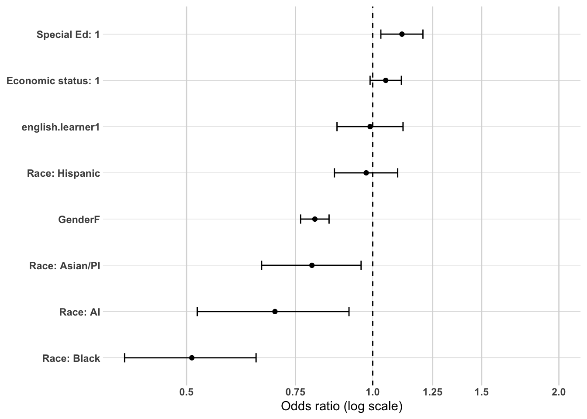
Model 2 - High School Characteristics and Local Labor Market
Overview Model 2 adds EDR and average local unemployment rate to the demographic baseline, maintaining the same sample of 27,247 individuals. VIF values remained well below 2.0 for all predictors, confirming no multicollinearity concerns with the addition of these variables. Model fit improved modestly over the demographic baseline (ΔAIC=-28.63, Nagelkerke R²=0.008), and the Hosmer-Lemeshow test improved substantially (χ²=9.49, df=8, p=0.303), indicating acceptable model fit at this stage.
Stability of Demographic Coefficients Demographic coefficients from Model 1 show strong stability with the addition of EDR and unemployment rate. Gender (OR=0.806), Black race/ethnicity (OR=0.522), AI (OR=0.674), Asian/PI (OR=0.766), special education status (OR=1.106), and English learner status (OR=0.994) all remain virtually unchanged from their Model 1 estimates. This confirms that the demographic associations identified at baseline are not attributable to geographic sorting or local labor market conditions within Southwest Minnesota.
EDR Both EDR 6W Upper Minnesota Valley and EDR 8 Southwest show significantly higher odds of sustained regional employment relative to the EDR 6E Southwest Central reference category. EDR 8 Southwest shows the stronger association (OR=1.194, 95% CI [1.120, 1.274], p<0.001), followed by EDR 6W Upper Minnesota Valley (OR=1.166, 95% CI [1.083, 1.256], p<0.001).
This finding requires careful interpretation. EDR 6E Southwest Central showed the strongest regional retention rates in the raw bivariate comparisons, but once demographic composition is controlled the pattern reverses. EDR 6E has a larger share of academically oriented, college-bound graduates who are more likely to pursue employment outside the region. Once these demographic differences are accounted for, graduates from EDR 6W and EDR 8 show modestly higher odds of regional employment, consistent with those subregions having fewer out-of-region employment opportunities drawing graduates away.
Average Unemployment Rate Average local unemployment rate shows no significant association with sustained regional employment (OR=1.007, 95% CI [0.985, 1.030], p=0.541). Local unemployment rate adds no independent explanatory power once demographic characteristics and EDR are controlled, suggesting that whatever relationship exists between local labor market conditions and regional workforce retention operates primarily through its correlation with the demographic and geographic variables already in the model.
Summary The addition of EDR and average unemployment rate produces a modest but statistically meaningful improvement in model fit over the demographic baseline (ΔAIC=-28.63). EDR emerges as a meaningful predictor of sustained regional employment after demographic adjustment, with EDR 6W and EDR 8 graduates showing modestly higher odds of regional employment than EDR 6E graduates once demographic composition is controlled. Average unemployment rate contributes no independent explanatory power in the multivariate context. The stability of demographic coefficients across Models 1 and 2 confirms that the demographic associations identified at baseline are robust to geographic and labor market controls. The still very low Nagelkerke R² (0.008) reflects the need for the high school accomplishment variables in Block 3 to meaningfully account for the observed variation in regional workforce retention.
or_plot <-tidy(model2, conf.int =TRUE, exponentiate =TRUE) %>%filter(term !="(Intercept)") %>%mutate(# Make labels nicer (edit these replacements to match your exact factor labels)term =str_replace_all(term, c("RaceEthnicity"="Race: ","economic.status"="Economic status: ","SpecialEdStatus"="Special Ed: ","pseo.participant"="PSEO: ","cte.achievement"="CTE: ","MCA.M"="MCA Math","highest.cred.level"="Highest credential" )),# Put most important effects near the top (optional: tweak ordering later)term =fct_reorder(term, estimate) )ggplot(or_plot, aes(x = estimate, y = term)) +geom_vline(xintercept =1, linetype ="dashed") +geom_vline(xintercept =c(0.5, 0.75, 1.25, 1.5, 2),color ="grey85") +geom_point() +geom_errorbar(aes(xmin = conf.low, xmax = conf.high),orientation ="y",width =0.2 ) +scale_x_log10(breaks =c(0.5, 0.75, 1, 1.25, 1.5, 2),labels =c("0.5", "0.75", "1.0", "1.25", "1.5", "2.0") ) + theme_line +labs(x ="Odds ratio (log scale)",y =NULL )
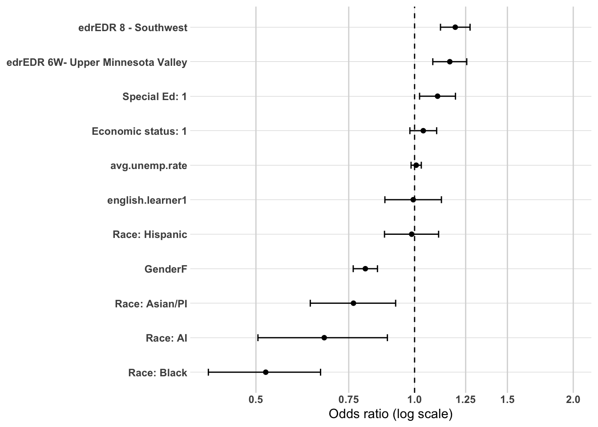
Model 3 - High School Accomplishments
Overview Model 3 adds took.ACT, ap.exam, cte.achievement, and MCA.R to the previous model, maintaining the same sample of 27,247 individuals. The addition of high school accomplishment variables produces the largest improvement in model fit observed across any block entry (ΔAIC=-486.96, Nagelkerke R²=0.034), confirming that high school preparation and academic achievement are the most powerful predictors of sustained regional employment examined thus far. VIF values remained well below 2.0 for all predictors, indicating no multicollinearity concerns. The Hosmer-Lemeshow test indicates good model fit (χ²=5.20, df=8, p=0.736) — a substantial improvement over Model 2.
Stability and Attenuation of Previous Coefficients The addition of high school accomplishment variables produces meaningful changes in several demographic and geographic coefficients, revealing important confounding patterns.
Gender attenuates modestly (OR from 0.806 to 0.884), suggesting that some of the female disadvantage in regional employment observed in Models 1 and 2 is explained by females being more likely to take the ACT, participate in AP courses, and score higher on MCA Reading — all of which are associated with non-regional employment. The gender association remains significant (p<0.001) but is meaningfully reduced.
Special education status reverses direction and becomes significantly negative (OR from 1.106 to 0.864, p<0.001). Once academic achievement and CTE engagement are controlled, special education graduates show lower odds of sustained regional employment than non-special education graduates. This reversal indicates that the positive special education coefficient in Models 1 and 2 was driven by the lower academic achievement and higher CTE engagement of special education graduates rather than an independent effect of special education status itself.
Economic status attenuates to non-significance (OR=0.952, p=0.108), suggesting its earlier marginal positive association with regional employment was largely attributable to the lower academic achievement and higher CTE engagement of economically disadvantaged graduates rather than an independent effect of economic disadvantage.
EDR 6W Upper Minnesota Valley attenuates to non-significance (OR=1.062, p=0.117) while EDR 8 Southwest remains significant but attenuates modestly (OR=1.169, p<0.001), suggesting that part of the EDR 6W regional employment advantage in Model 2 was explained by the higher CTE engagement of graduates from that subregion.
Race/ethnicity coefficients remain largely stable, with Black graduates continuing to show the lowest odds of regional employment (OR=0.514, p<0.001), followed by AI (OR=0.663, p=0.005) and Asian/PI (OR=0.767, p=0.006) graduates. The persistence of these race/ethnicity associations after controlling for academic achievement and CTE engagement is a substantively important finding, suggesting that racial and ethnic disparities in regional workforce retention reflect factors beyond academic preparation and pathway sorting.
ACT Participation ACT takers show significantly lower odds of sustained regional employment than non-ACT takers (OR=0.839, 95% CI [0.787, 0.893], p<0.001), confirming the bivariate finding that ACT participation is a strong signal of college-oriented pathways leading to non-regional employment. This association holds after controlling for AP exam participation, CTE engagement, and MCA Reading score, indicating that ACT participation captures an independent college preparedness dimension beyond academic achievement alone.
AP Exam Participation AP exam participants show significantly lower odds of sustained regional employment than non-participants (OR=0.645, 95% CI [0.591, 0.704], p<0.001), the strongest negative association among the high school accomplishment variables. AP exam participation is a particularly powerful predictor of non-regional employment, consistent with its strong association with 4-year non-regional institution graduation identified in the postsecondary pathway analysis.
CTE Achievement CTE engagement shows the strongest and most substantively important associations in Model 3, with both CTE Concentrators or Completors and CTE Participants showing significantly higher odds of sustained regional employment relative to No CTE graduates. CTE Concentrators or Completors show the largest positive association of any variable in the model (OR=1.572, 95% CI [1.459, 1.693], p<0.001), followed by CTE Participants (OR=1.324, 95% CI [1.224, 1.434], p<0.001). A clear dose-response pattern is evident — higher CTE engagement is associated with progressively higher odds of regional workforce retention — confirming the CTE regional anchoring mechanism identified throughout the descriptive analysis.
MCA Reading Higher MCA Reading scores are associated with significantly lower odds of sustained regional employment (OR=0.883, 95% CI [0.853, 0.914], p<0.001), confirming that academic achievement as measured by standardized reading proficiency is associated with employment outside the region. This association holds after controlling for ACT participation, AP exam, and CTE engagement, indicating that reading achievement captures an independent dimension of academic sorting beyond college preparedness behaviors alone.
Summary The addition of high school accomplishment variables produces the largest improvement in model fit of any block entry (ΔAIC=-486.96, ΔNagelkerke R²=+0.026), confirming these variables as the most powerful predictors of sustained regional employment examined in this analysis. The results reveal a clear and consistent preparation sorting mechanism — academic achievement and college preparedness indicators (ACT participation, AP exam, MCA Reading) are all significantly and negatively associated with regional employment, while CTE engagement is strongly and positively associated with regional employment in a clear dose-response pattern. The attenuation and reversal of the special education and economic status coefficients confirms that their earlier associations were largely attributable to the lower academic achievement and higher CTE engagement of these groups rather than independent effects of disadvantage status. Race/ethnicity associations persist after these controls, suggesting that racial and ethnic disparities in regional workforce retention reflect factors beyond academic preparation and pathway sorting.
or_plot <-tidy(model3, conf.int =TRUE, exponentiate =TRUE) %>%filter(term !="(Intercept)") %>%mutate(# Make labels nicer (edit these replacements to match your exact factor labels)term =str_replace_all(term, c("RaceEthnicity"="Race: ","economic.status"="Economic status: ","SpecialEdStatus"="Special Ed: ","pseo.participant"="PSEO: ","cte.achievement"="CTE: ","MCA.M"="MCA Math","highest.cred.level"="Highest credential" )),# Put most important effects near the top (optional: tweak ordering later)term =fct_reorder(term, estimate) )ggplot(or_plot, aes(x = estimate, y = term)) +geom_vline(xintercept =1, linetype ="dashed") +geom_vline(xintercept =c(0.5, 0.75, 1.25, 1.5, 2),color ="grey85") +geom_point() +geom_errorbar(aes(xmin = conf.low, xmax = conf.high),orientation ="y",width =0.2 ) +scale_x_log10(breaks =c(0.5, 0.75, 1, 1.25, 1.5, 2),labels =c("0.5", "0.75", "1.0", "1.25", "1.5", "2.0") ) + theme_line +labs(x ="Odds ratio (log scale)",y =NULL )
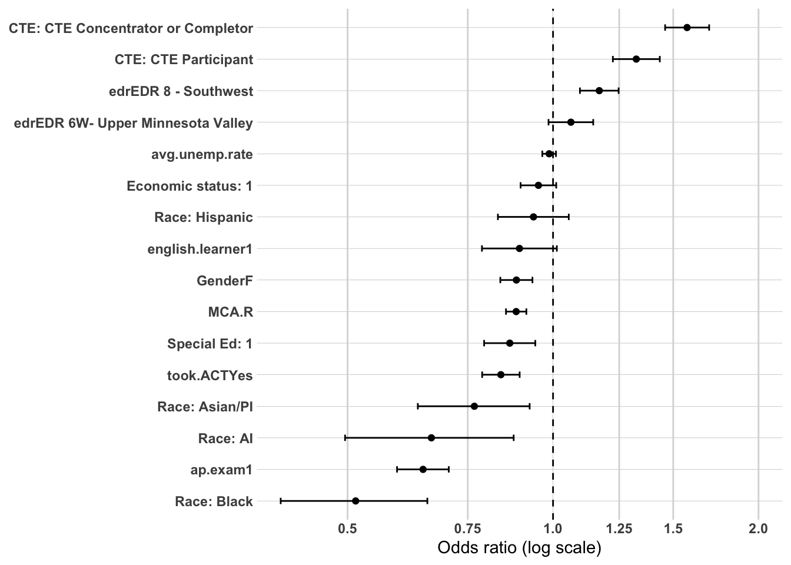
Model 4 - Postsecondary Pathway
Overview Model 4 adds the combined postsecondary pathway variable (ps.pathway) to the previous model, maintaining the same sample of 27,247 individuals. The postsecondary pathway variable captures both credential level and graduation location simultaneously, with Did not graduate ps as the reference category. The addition of this variable produces the second largest improvement in model fit observed across any block entry (ΔAIC=-605.85, Nagelkerke R²=0.065), confirming that postsecondary pathway is a powerful and independent predictor of sustained regional employment beyond demographic characteristics and high school preparation. VIF values remained well below 2.0 for all predictors including ps.pathway (GVIF^(1/(2*Df))=1.035), indicating no multicollinearity concerns. The Hosmer-Lemeshow test indicates good model fit (χ²=12.78, df=8, p=0.120).
Stability and Attenuation of Previous Coefficients The addition of postsecondary pathway produces modest but meaningful attenuation in several coefficients from Model 3, confirming that postsecondary pathway partially mediates earlier associations.
Gender attenuates slightly (OR from 0.884 to 0.853, p<0.001), remaining significant. Females continue to show lower odds of regional employment even after controlling for their tendency to pursue higher credentials and non-regional graduation locations, suggesting a residual gender effect on geographic mobility beyond postsecondary pathway alone.
Special education status attenuates slightly but remains significantly negative (OR from 0.864 to 0.887, p=0.007), confirming that special education graduates show lower odds of regional employment independent of their postsecondary pathway choices.
ACT participation attenuates modestly (OR from 0.839 to 0.864, p<0.001), AP exam attenuates more substantially (OR from 0.645 to 0.715, p<0.001), and CTE Concentrator or Completor attenuates modestly (OR from 1.572 to 1.490, p<0.001). These attenuations confirm that postsecondary pathway partially mediates the relationships between high school preparation variables and regional employment — students who take AP exams are less likely to be in regional employment partly because they are more likely to pursue bachelor degrees outside the region, and CTE concentrators are more likely to be in regional employment partly because they are more likely to graduate from regional institutions. However the persistence of all these associations after controlling for postsecondary pathway confirms that high school preparation has independent effects on regional workforce retention beyond its influence on postsecondary pathway selection.
EDR 6W Upper Minnesota Valley re-emerges as significant (OR=1.118, p=0.005) after attenuating to non-significance in Model 3, while EDR 8 Southwest attenuates slightly (OR=1.156, p<0.001). This suggests that once postsecondary pathway is controlled, EDR 6W graduates show modestly higher odds of regional employment, likely reflecting the stronger regional institutional infrastructure in that subregion.
Race/ethnicity coefficients remain stable and significant, with Black (OR=0.511, p<0.001), AI (OR=0.675, p=0.007), and Asian/PI (OR=0.747, p=0.003) graduates all continuing to show lower odds of regional employment relative to White graduates even after controlling for postsecondary pathway. The persistence of these associations through all four model specifications is a substantively important finding, suggesting that racial and ethnic disparities in regional workforce retention are not fully explained by differences in demographic characteristics, high school preparation, or postsecondary pathway.
Postsecondary Pathway The ps.pathway variable reveals a clear and substantively compelling pattern of regional workforce sorting relative to the Did not graduate ps reference category.
Sub-baccalaureate - region graduates show the strongest positive association with sustained regional employment of any postsecondary pathway category (OR=2.086, 95% CI [1.913, 2.273], p<0.001), confirming that graduating from a regional institution with a shorter-term credential is the postsecondary pathway most strongly associated with remaining in the regional workforce.
Bachelor or higher - region graduates also show strong positive odds of regional employment (OR=1.914, 95% CI [1.711, 2.140], p<0.001), indicating that even higher credential holders who graduate from regional institutions show substantially higher odds of regional employment than those who did not graduate from postsecondary at all.
Sub-baccalaureate - MN graduates show modestly higher odds of regional employment than the Did not graduate ps reference group (OR=1.385, 95% CI [1.251, 1.532], p<0.001), suggesting that completing a shorter-term credential elsewhere in Minnesota is still associated with somewhat higher regional employment odds than not completing postsecondary at all.
Sub-baccalaureate - outside MN graduates show no significant difference in odds of regional employment compared to the Did not graduate ps reference group (OR=1.043, 95% CI [0.915, 1.188], p=0.522), suggesting that completing a shorter-term credential outside Minnesota confers no additional regional employment advantage over not graduating from postsecondary.
Bachelor or higher - MN graduates show significantly lower odds of regional employment than the Did not graduate ps reference group (OR=0.652, 95% CI [0.586, 0.725], p<0.001), confirming that completing a higher credential elsewhere in Minnesota is strongly associated with employment outside the Southwest Minnesota region.
Bachelor or higher - outside MN graduates also show significantly lower odds of regional employment than the Did not graduate ps reference group (OR=0.777, 95% CI [0.698, 0.863], p<0.001), consistent with the strong out-of-state migration pattern associated with out-of-state graduation identified throughout the descriptive analysis. Notably the odds ratio for this group is less extreme than Bachelor or higher - MN, suggesting that out-of-state bachelor graduates are somewhat more likely to return to the region than those who completed their bachelor degree elsewhere in Minnesota.
Summary The addition of the postsecondary pathway variable produces the second largest improvement in model fit (ΔAIC=-605.85, ΔNagelkerke R²=+0.031), confirming that postsecondary credential level and graduation location jointly represent a powerful and independent predictor of sustained regional employment. The results provide compelling multivariate confirmation of the regional anchoring mechanism identified throughout the descriptive analysis — graduating from a regional institution, whether with a sub-baccalaureate or bachelor degree or higher credential, is the postsecondary pathway most strongly associated with regional workforce retention, with odds ratios of approximately 2.0 for both regional graduation categories. The persistence of gender, race/ethnicity, special education status, and high school accomplishment associations after controlling for postsecondary pathway confirms that these variables have independent effects on regional workforce retention beyond their influence on postsecondary pathway selection. Taken together the four models tell a coherent and consistent story — regional workforce retention is shaped by a sequential sorting process in which demographic characteristics, high school preparation, and postsecondary pathway each contribute independent and cumulative explanatory power, with high school accomplishments and postsecondary pathway together accounting for the vast majority of explained variance in the outcome.
or_plot <-tidy(model4, conf.int =TRUE, exponentiate =TRUE) %>%filter(term !="(Intercept)") %>%mutate(# Make labels nicer (edit these replacements to match your exact factor labels)term =str_replace_all(term, c("RaceEthnicity"="Race: ","economic.status"="Economic status: ","SpecialEdStatus"="Special Ed: ","pseo.participant"="PSEO: ","cte.achievement"="CTE: ","MCA.M"="MCA Math","highest.cred.level"="Highest credential" )),# Put most important effects near the top (optional: tweak ordering later)term =fct_reorder(term, estimate) )ggplot(or_plot, aes(x = estimate, y = term)) +geom_vline(xintercept =1, linetype ="dashed") +geom_vline(xintercept =c(0.5, 0.75, 1.25, 1.5, 2),color ="grey85") +geom_point() +geom_errorbar(aes(xmin = conf.low, xmax = conf.high),orientation ="y",width =0.2 ) +scale_x_log10(breaks =c(0.5, 0.75, 1, 1.25, 1.5, 2),labels =c("0.5", "0.75", "1.0", "1.25", "1.5", "2.0") ) + theme_line +labs(x ="Odds ratio (log scale)",y =NULL )
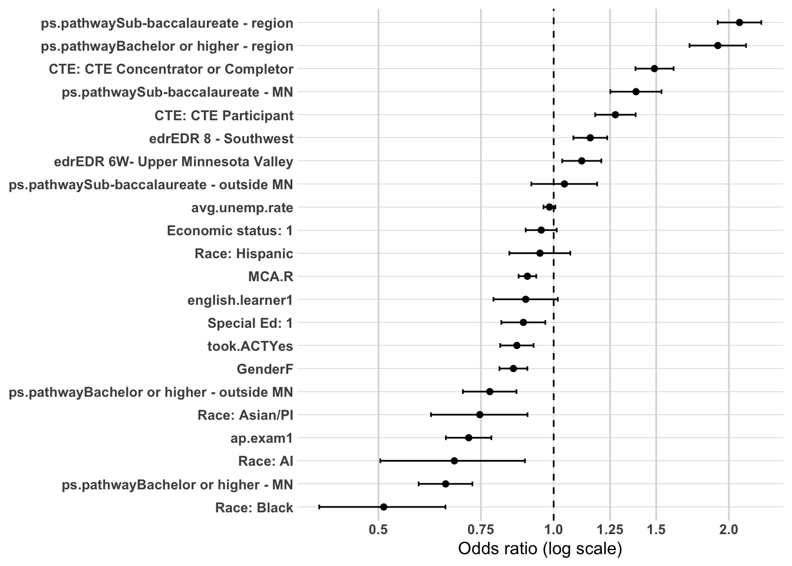
Summary of Multivariate Confirmation Analysis
Four hierarchical logistic regression models were estimated to examine the independent and cumulative associations of demographic characteristics, high school characteristics and local labor market conditions, high school accomplishments, and postsecondary pathway with sustained regional employment at five years post-graduation (N=27,247). Each successive model added a theoretically motivated block of variables, allowing assessment of whether each block contributed independent explanatory power beyond previous blocks and how earlier coefficients changed with the addition of new variables.
Model Fit Progression
Model fit improved substantially and consistently across all four specifications. The largest single improvement occurred with the addition of high school accomplishment variables in Model 3 (ΔAIC=-486.96), followed by the addition of postsecondary pathway in Model 4 (ΔAIC=-605.85). The addition of high school characteristics and labor market variables in Model 2 produced a modest but statistically meaningful improvement (ΔAIC=-28.63). Nagelkerke R² increased from 0.006 in the demographic baseline to 0.065 in the full model, with the largest single increments occurring in Models 3 and 4. Hosmer-Lemeshow goodness of fit improved progressively across models, reaching acceptable levels in Model 2 and good fit in Models 3 and 4.
Model
Variables Added
AIC
Δ AIC
Nagelkerke R²
1
Demographics
32,887
—
0.006
2
+ HS Characteristics and Labor Market
32,858
-28.63
0.008
3
+ HS Accomplishments
32,371
-486.96
0.034
4
+ Postsecondary Pathway
31,765
-605.85
0.065
Three Mechanisms Confirmed
The hierarchical modeling structure was designed to evaluate three central mechanisms underlying sustained regional employment. All three are confirmed by the multivariate results.
The preparation sorting mechanism is confirmed by Model 3, which reveals that academic achievement and college preparedness indicators — ACT participation (OR=0.839), AP exam participation (OR=0.645), and MCA Reading score (OR=0.883) — are all significantly and independently associated with lower odds of regional employment, while CTE engagement shows the opposite pattern in a clear dose-response relationship — CTE Concentrators or Completors (OR=1.572) and CTE Participants (OR=1.324) both show substantially higher odds of regional employment relative to No CTE graduates. These associations persist through Model 4 with modest attenuation, confirming that high school preparation has independent effects on regional workforce retention beyond its influence on postsecondary pathway selection.
The credential stratification mechanism is partially confirmed by Model 4. Sub-baccalaureate credentials are associated with higher regional employment odds when earned at regional institutions (OR=2.086) or elsewhere in Minnesota (OR=1.385), while bachelor degrees or higher are associated with lower regional employment odds when earned outside the region regardless of whether that institution is in Minnesota (OR=0.652) or out of state (OR=0.777). This confirms that credential level shapes regional employment outcomes, but its effect is inseparable from the geographic location of the credential — the two dimensions interact in ways that make credential level alone an incomplete predictor of regional retention.
The regional anchoring mechanism receives the strongest confirmation of any mechanism examined. Graduating from a regional postsecondary institution is the single most powerful postsecondary predictor of sustained regional employment regardless of credential level — Sub-baccalaureate - region (OR=2.086) and Bachelor or higher - region (OR=1.914) both show the highest odds of regional employment of any postsecondary pathway category, and both remain strongly significant after controlling for all demographic and high school preparation variables. This finding provides definitive multivariate confirmation of the regional anchoring pattern identified throughout the descriptive analysis and has direct implications for regional postsecondary investment strategy.
Persistent Associations Across All Models
Several associations prove remarkably robust across all four model specifications, surviving the successive addition of high school accomplishment and postsecondary pathway controls.
Gender remains a significant negative predictor of regional employment across all four models (final OR=0.853), with the modest attenuation from Model 1 (OR=0.806) to Model 4 suggesting that females’ lower regional employment odds are partly but not fully explained by their greater tendency toward academic pathways and non-regional graduation.
Race/ethnicity associations are the most persistent finding in the entire analysis. Black (OR=0.511), AI (OR=0.675), and Asian/PI (OR=0.747) graduates all show significantly lower odds of regional employment relative to White graduates across all four models, with coefficients remaining remarkably stable from Model 1 through Model 4. The fact that these associations survive the addition of high school accomplishment variables and postsecondary pathway is a critically important finding — racial and ethnic disparities in regional workforce retention are not explained by differences in academic preparation or postsecondary pathway choices, suggesting structural and systemic factors that operate independently of the educational sorting mechanisms captured in this analysis.
EDR 8 Southwest shows a consistent and significant positive association with regional employment across all four models (final OR=1.156), while EDR 6W Upper Minnesota Valley attenuates to non-significance in Model 3 before re-emerging in Model 4 (OR=1.118). These geographic effects confirm that subregional differences in regional employment patterns persist even after controlling for the full set of individual-level predictors.
Overall Conclusions
The four-model hierarchical analysis confirms that sustained regional employment at five years post-graduation is shaped by a sequential and cumulative sorting process. Demographic characteristics establish baseline disparities that persist throughout. High school characteristics and local labor market conditions add modest independent explanatory power primarily through EDR. High school accomplishments — particularly CTE engagement and academic achievement indicators — are the most powerful individual-level predictors, accounting for the largest single increment in explained variance. Postsecondary pathway, particularly graduation from a regional institution, adds substantial independent explanatory power and provides the strongest single predictor of regional workforce retention in the fully specified model.
Together these findings confirm that regional workforce retention in Southwest Minnesota is best understood not as an outcome of any single factor but as the product of a sequential sorting process that begins with who individuals are, is shaped by what they do in high school, and is most proximally determined by where and how they complete postsecondary education. Strengthening regional postsecondary institutions and expanding access to CTE pathways are the two most directly actionable levers identified by this analysis for improving regional workforce retention, while the persistence of racial and ethnic disparities across all model specifications signals the need for targeted equity-focused interventions that operate beyond the educational pathway alone.
Prep post-secondary variables
It’s cystal clear that post-secondary pathways is significantly related to workforce participation outcomes. So it’s important that we tease out which independent variables are associated with the various post-secondary pathway outcomes. The following analysis will explore the relationships to three different, binary dependent variables;
ps.grad: Yes or no, entire dataset
highest.cred.level: sub-baccalaureate vs. bacherlor or higher, subset post-secondary completers only
ps.grad.location: regional vs. non-regional, subset post-secondary completers only.
We are going to stick with the same independent variables blocks as before;
Model 1: Demographics
Model 2: Demographics + high school characteristics
Model 3: Demographics + high school characteristics + high school accomplishments
interpretations will follow the same logic as the previous modeling as well.
Overview Model 1 establishes the demographic baseline for predicting postsecondary graduation (N=38,754). The model includes gender, race/ethnicity, economic status, special education status, and English learner status. Variance inflation factors were all well below 2.0, indicating no multicollinearity concerns among the demographic predictors. The Hosmer-Lemeshow test indicated some misfit at the baseline stage (χ²=12.47, df=4, p=0.014), which is expected given the limited explanatory variables included. The model explains a meaningful proportion of variance in the outcome (Nagelkerke R²=0.195), notably higher than the demographic baseline in the workforce participation analysis, confirming that demographic characteristics are substantially more predictive of whether someone completes postsecondary education than of where they ultimately work.
Gender Females show significantly higher odds of postsecondary graduation compared to males (OR=1.679, 95% CI [1.607, 1.755], p<0.001), confirming the well-established national pattern of female postsecondary attainment advantage. This is the strongest positive association in the baseline model and one of the most robust findings across the entire analysis.
Race/Ethnicity Relative to White graduates, all minority racial/ethnic groups show significantly lower odds of postsecondary graduation. AI graduates show the lowest odds by a substantial margin (OR=0.314, 95% CI [0.254, 0.386], p<0.001), followed by Hispanic graduates (OR=0.463, 95% CI [0.418, 0.512], p<0.001), Black graduates (OR=0.788, 95% CI [0.666, 0.930], p=0.005), and Asian/PI graduates (OR=0.833, 95% CI [0.722, 0.960], p=0.011). The magnitude of the AI and Hispanic disparities is particularly striking — AI graduates show odds of postsecondary graduation less than one third those of White graduates, and Hispanic graduates show odds less than half those of White graduates, even after controlling for economic status, special education status, and English learner status. Small sample sizes for AI, Asian/PI, and Black graduates warrant cautious interpretation.
Economic Status Economically disadvantaged graduates show dramatically lower odds of postsecondary graduation than non-disadvantaged graduates (OR=0.360, 95% CI [0.343, 0.378], p<0.001). This is the largest effect size observed for any binary predictor in the baseline model and reflects the fundamental access barrier that economic disadvantage poses to postsecondary completion in Southwest Minnesota. Economically disadvantaged graduates face odds of graduating from postsecondary that are less than 40% those of their non-disadvantaged peers.
Special Education Status Special education graduates show dramatically lower odds of postsecondary graduation than non-special education graduates (OR=0.275, 95% CI [0.255, 0.296], p<0.001), the lowest odds ratio observed for any predictor in the baseline model. Special education graduates face odds of postsecondary graduation that are less than 30% those of non-special education graduates, reflecting the profound barriers this group faces in accessing and completing postsecondary education.
English Learner Status English learners show significantly lower odds of postsecondary graduation than non-English learners (OR=0.838, 95% CI [0.753, 0.931], p=0.001), though the magnitude of this association is considerably smaller than for economic status and special education status. This finding contrasts with the non-significant English learner association observed in the workforce participation models, suggesting that language status is a more meaningful predictor of postsecondary completion than of regional employment location once other characteristics are controlled.
Summary The demographic baseline model for postsecondary graduation reveals substantially stronger associations than were observed in the workforce participation baseline, with a Nagelkerke R² of 0.195 compared to 0.006 for the workforce participation model. This confirms that demographic characteristics are far more predictive of whether someone completes postsecondary education than of where they ultimately work. Economic status and special education status are the dominant predictors, each showing odds ratios below 0.40, while AI and Hispanic graduates show the most severe racial and ethnic disparities in postsecondary completion. Gender shows a strong positive association with females showing considerably higher odds of graduation than males. All demographic predictors are statistically significant in this baseline model, a notable contrast to the workforce participation baseline where several demographic variables showed weak or non-significant associations.
or_plot <-tidy(model_ps_grad_1, conf.int =TRUE, exponentiate =TRUE) %>%filter(term !="(Intercept)") %>%mutate(# Make labels nicer (edit these replacements to match your exact factor labels)term =str_replace_all(term, c("RaceEthnicity"="Race: ","economic.status"="Economic status: ","SpecialEdStatus"="Special Ed: ","pseo.participant"="PSEO: ","cte.achievement"="CTE: ","MCA.M"="MCA Math","highest.cred.level"="Highest credential" )),# Put most important effects near the top (optional: tweak ordering later)term =fct_reorder(term, estimate) )ggplot(or_plot, aes(x = estimate, y = term)) +geom_vline(xintercept =1, linetype ="dashed") +geom_vline(xintercept =c(0.5, 0.75, 1.25, 1.5, 2),color ="grey85") +geom_point() +geom_errorbar(aes(xmin = conf.low, xmax = conf.high),orientation ="y",width =0.2 ) +scale_x_log10(breaks =c(0.5, 0.75, 1, 1.25, 1.5, 2),labels =c("0.5", "0.75", "1.0", "1.25", "1.5", "2.0") ) + theme_line +labs(x ="Odds ratio (log scale)",y =NULL )
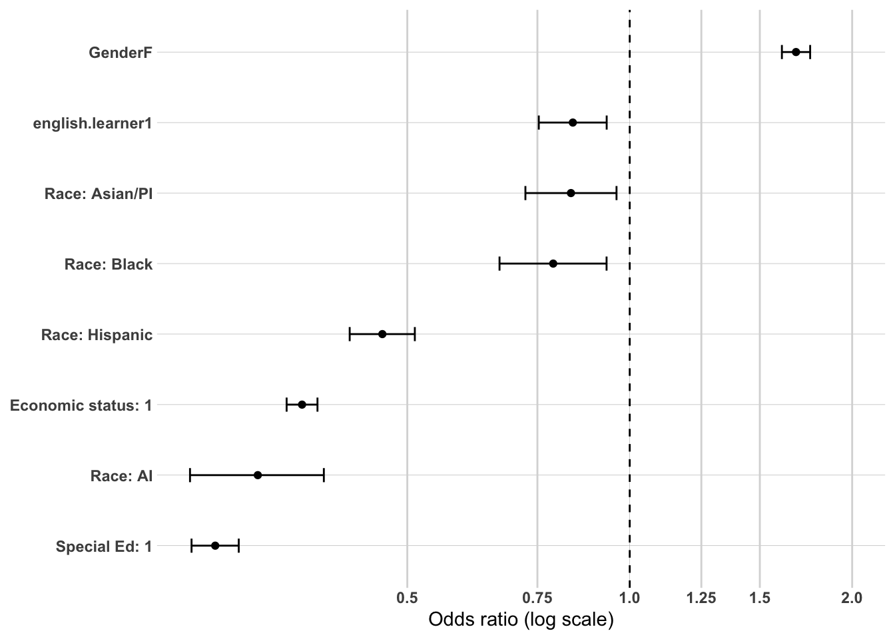
Model 2 - High School Characteristics and Local Labor Market
Overview Model 2 adds EDR and average local unemployment rate to the demographic baseline, maintaining the same sample of 38,754 individuals. VIF values remained well below 2.0 for all predictors, confirming no multicollinearity concerns. Model fit improved meaningfully over the demographic baseline (ΔAIC=-117.80, Nagelkerke R²=0.199). The Hosmer-Lemeshow test indicates some misfit (χ²=21.73, df=8, p=0.005), suggesting the model does not fully capture the complexity of postsecondary graduation patterns with demographic and geographic variables alone. This is expected and consistent with the need for high school accomplishment variables in Block 3.
Stability of Demographic Coefficients Demographic coefficients from Model 1 show strong stability with the addition of EDR and unemployment rate. Gender (OR=1.683), economic status (OR=0.356), special education status (OR=0.272), and AI race/ ethnicity (OR=0.294) all remain virtually unchanged from their Model 1 estimates. Hispanic graduates show a slight strengthening of the negative association (OR from 0.463 to 0.460), while Asian/PI graduates show modest attenuation (OR from 0.833 to 0.775), suggesting some geographic confounding for this group. English learner status strengthens slightly (OR from 0.838 to 0.824), remaining significant. The overall stability of demographic coefficients confirms that these associations are not attributable to geographic sorting or local labor market conditions.
EDR Both EDR 6W Upper Minnesota Valley and EDR 8 Southwest show significantly higher odds of postsecondary graduation relative to the EDR 6E Southwest Central reference category. EDR 8 Southwest shows the stronger association (OR=1.270, 95% CI [1.204, 1.339], p<0.001), followed by EDR 6W Upper Minnesota Valley (OR=1.154, 95% CI [1.085, 1.229], p<0.001).
As observed in the workforce participation models, this finding requires careful interpretation. EDR 6E Southwest Central contains a larger share of college- oriented graduates drawn to the broader Minnesota economy, which suppresses its apparent postsecondary graduation advantage in the raw bivariate comparisons. Once demographic composition is controlled, graduates from EDR 6W and EDR 8 show modestly higher odds of postsecondary graduation, consistent with those subregions having stronger community-level norms around local postsecondary participation or greater availability of accessible regional institutions.
Average Unemployment Rate Unlike the workforce participation models where average unemployment rate was non-significant, here it shows a small but significant negative association with postsecondary graduation (OR=0.971, 95% CI [0.954, 0.989], p=0.002). This is consistent with the opportunity cost hypothesis — graduates from areas with lower unemployment rates face more attractive immediate employment alternatives and are therefore somewhat less likely to pursue and complete postsecondary education. While the effect size is small, this is the first model in the analysis where local labor market conditions show a statistically significant independent association with a postsecondary outcome after demographic controls.
Summary The addition of EDR and average unemployment rate produces a meaningful improvement in model fit over the demographic baseline (ΔAIC=-117.80), notably larger than the corresponding improvement in the workforce participation Model 2 (ΔAIC=-28.63). This suggests that geographic and labor market context plays a more meaningful role in shaping postsecondary graduation than regional workforce location. EDR shows significant positive associations for both non-reference subregions after demographic adjustment, and average unemployment rate shows a small but significant negative association consistent with the opportunity cost hypothesis. The persistence of strong demographic associations — particularly for economic status, special education status, AI, and Hispanic graduates — confirms that geographic and labor market controls do not account for the substantial demographic disparities in postsecondary graduation identified at baseline. The Nagelkerke R² of 0.199 reflects that demographic and geographic variables together explain approximately 20% of the variance in postsecondary graduation, with high school accomplishment variables expected to add meaningful additional explanatory power in Block 3.
or_plot <-tidy(model_ps_grad_2, conf.int =TRUE, exponentiate =TRUE) %>%filter(term !="(Intercept)") %>%mutate(# Make labels nicer (edit these replacements to match your exact factor labels)term =str_replace_all(term, c("RaceEthnicity"="Race: ","economic.status"="Economic status: ","SpecialEdStatus"="Special Ed: ","pseo.participant"="PSEO: ","cte.achievement"="CTE: ","MCA.M"="MCA Math","highest.cred.level"="Highest credential" )),# Put most important effects near the top (optional: tweak ordering later)term =fct_reorder(term, estimate) )ggplot(or_plot, aes(x = estimate, y = term)) +geom_vline(xintercept =1, linetype ="dashed") +geom_vline(xintercept =c(0.5, 0.75, 1.25, 1.5, 2),color ="grey85") +geom_point() +geom_errorbar(aes(xmin = conf.low, xmax = conf.high),orientation ="y",width =0.2 ) +scale_x_log10(breaks =c(0.5, 0.75, 1, 1.25, 1.5, 2),labels =c("0.5", "0.75", "1.0", "1.25", "1.5", "2.0") ) + theme_line +labs(x ="Odds ratio (log scale)",y =NULL )
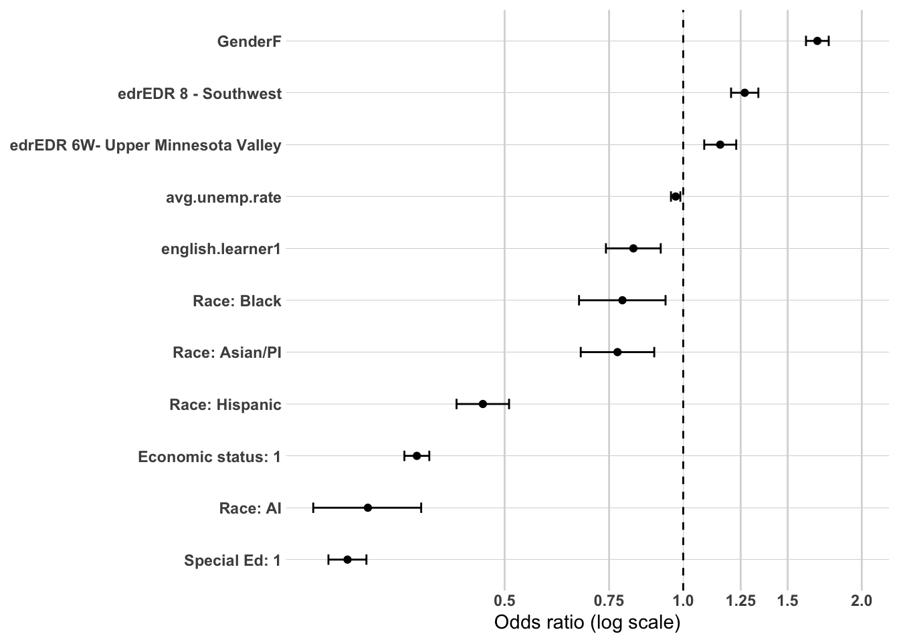
Model 3 - High School Accomplishments
Overview Model 3 adds took.ACT, ap.exam, cte.achievement, and MCA.R to the previous model, maintaining the same sample of 38,754 individuals. The addition of high school accomplishment variables produces a very large improvement in model fit (ΔAIC=-2,961.80, Nagelkerke R²=0.283), the largest single block improvement observed across the entire postsecondary pathway analysis. VIF values remained well below 2.0 for all predictors, indicating no multicollinearity concerns. The Hosmer-Lemeshow test indicates significant misfit (χ²=58.41, df=8, p<0.001), which is most likely an artifact of the very large sample size making the test hypersensitive to trivial deviations from perfect fit rather than evidence of substantive model inadequacy. The very large improvement in AIC and Nagelkerke R² provide complementary evidence of meaningful model improvement.
Stability and Attenuation of Previous Coefficients The addition of high school accomplishment variables produces meaningful changes in several coefficients from Model 2, revealing important confounding patterns.
Gender attenuates modestly (OR from 1.683 to 1.496), remaining highly significant (p<0.001). Females continue to show substantially higher odds of postsecondary graduation even after controlling for academic achievement and CTE engagement, suggesting that the female postsecondary attainment advantage reflects factors beyond academic preparation alone.
Economic status attenuates meaningfully (OR from 0.356 to 0.433), remaining highly significant (p<0.001). The attenuation confirms that some of the economic disadvantage effect on postsecondary graduation operates through lower academic achievement and college preparedness, but a substantial independent effect of economic disadvantage persists after these controls.
Special education status attenuates substantially (OR from 0.272 to 0.510), remaining highly significant (p<0.001). The attenuation from Model 2 to Model 3 is the largest observed for any variable, confirming that much of the special education disadvantage in postsecondary graduation is explained by lower academic achievement and college preparedness indicators. However the persistent and substantial negative association after these controls indicates that special education status has meaningful independent effects on postsecondary graduation beyond academic preparation.
English learner status reverses direction and becomes non-significant (OR from 0.824 to 1.074, p=0.216). Once academic achievement and college preparedness are controlled, English learners show no significant difference in postsecondary graduation odds from non-English learners. This suggests the negative English learner association in Models 1 and 2 was largely attributable to lower academic achievement rather than an independent effect of language status.
Black race/ethnicity attenuates to non-significance (OR from 0.790 to 0.865, p=0.108), suggesting that the Black graduation disadvantage observed in Models 1 and 2 is largely explained by differences in academic achievement and college preparedness. AI (OR=0.318, p<0.001) and Hispanic (OR=0.531, p<0.001) graduates continue to show large and significant negative associations, confirming that these groups face barriers to postsecondary graduation that extend beyond academic preparation.
Average unemployment rate reverses direction (OR from 0.971 to 1.058, p<0.001). Once high school accomplishments are controlled, higher local unemployment is associated with higher odds of postsecondary graduation — consistent with the opportunity cost hypothesis operating in reverse. When local employment opportunities are scarce and academic preparation is held constant, students are more likely to pursue and complete postsecondary education rather than enter the workforce directly.
EDR associations strengthen with the addition of high school accomplishments. EDR 8 Southwest (OR=1.353, p<0.001) and EDR 6W Upper Minnesota Valley (OR=1.280, p<0.001) both show stronger positive associations than in Model 2, suggesting that geographic subregion has an independent positive effect on postsecondary graduation beyond what is explained by demographic composition and academic preparation.
ACT Participation ACT takers show dramatically higher odds of postsecondary graduation than non-ACT takers (OR=2.887, 95% CI [2.734, 3.048], p<0.001), the largest positive association observed for any variable across the entire postsecondary pathway analysis. This confirms that ACT participation is the single most powerful high school-level predictor of postsecondary graduation, capturing a combination of academic readiness, college intention, and institutional preparation that extends well beyond academic achievement alone.
AP Exam Participation AP exam participants show significantly higher odds of postsecondary graduation than non- participants (OR=1.938, 95% CI [1.805, 2.081], p<0.001), the second largest positive association in the model. AP exam participation is a powerful independent predictor of postsecondary completion even after controlling for ACT participation and MCA Reading score, confirming that early college-level academic engagement has effects on graduation that go beyond general academic achievement.
CTE Achievement CTE engagement shows a weak and mostly non-significant inverse relationship with postsecondary graduation in this model. CTE Concentrators or Completors show marginally significantly lower odds of graduation than No CTE graduates (OR=0.938, 95% CI [0.882, 0.998], p=0.043), while CTE Participants show no significant difference (OR=0.987, p=0.706). These very small and mostly non-significant associations confirm that CTE engagement has minimal independent effect on postsecondary graduation once academic achievement and college preparedness variables are controlled, in stark contrast to its strong association with regional workforce retention identified in the workforce participation models.
MCA Reading Higher MCA Reading scores are associated with significantly higher odds of postsecondary graduation (OR=1.238, 95% CI [1.201, 1.277], p<0.001), confirming that reading proficiency is a meaningful independent predictor of postsecondary completion after controlling for ACT participation, AP exam, and CTE engagement. The direction here is the opposite of what was observed in the workforce participation models, where higher MCA Reading was associated with lower odds of regional employment — reflecting that higher academic achievement simultaneously increases postsecondary graduation odds and decreases regional workforce retention.
Summary The addition of high school accomplishment variables produces the largest single improvement in model fit observed across the entire postsecondary pathway analysis (ΔAIC=-2,961.80, ΔNagelkerke R²=+0.084), confirming that high school preparation is the dominant predictor of postsecondary graduation. ACT participation and AP exam participation show the strongest positive associations, while MCA Reading adds independent explanatory power beyond these college preparedness behaviors. CTE engagement shows minimal independent association with graduation once other accomplishment variables are controlled. The substantial attenuation of economic status, special education status, and Black race/ethnicity coefficients confirms that these groups’ lower graduation rates are partly but not fully explained by differences in academic preparation — persistent independent effects of economic disadvantage and special education status remain even after controlling for all high school accomplishment variables, while the persistent AI and Hispanic disadvantages suggest barriers to postsecondary completion that extend well beyond academic preparation alone.
or_plot <-tidy(model_ps_grad_3, conf.int =TRUE, exponentiate =TRUE) %>%filter(term !="(Intercept)") %>%mutate(# Make labels nicer (edit these replacements to match your exact factor labels)term =str_replace_all(term, c("RaceEthnicity"="Race: ","economic.status"="Economic status: ","SpecialEdStatus"="Special Ed: ","pseo.participant"="PSEO: ","cte.achievement"="CTE: ","MCA.M"="MCA Math","highest.cred.level"="Highest credential" )),# Put most important effects near the top (optional: tweak ordering later)term =fct_reorder(term, estimate) )ggplot(or_plot, aes(x = estimate, y = term)) +geom_vline(xintercept =1, linetype ="dashed") +geom_vline(xintercept =c(0.5, 0.75, 1.25, 1.5, 2),color ="grey85") +geom_point() +geom_errorbar(aes(xmin = conf.low, xmax = conf.high),orientation ="y",width =0.2 ) +scale_x_log10(breaks =c(0.5, 0.75, 1, 1.25, 1.5, 2),labels =c("0.5", "0.75", "1.0", "1.25", "1.5", "2.0") ) + theme_line +labs(x ="Odds ratio (log scale)",y =NULL )
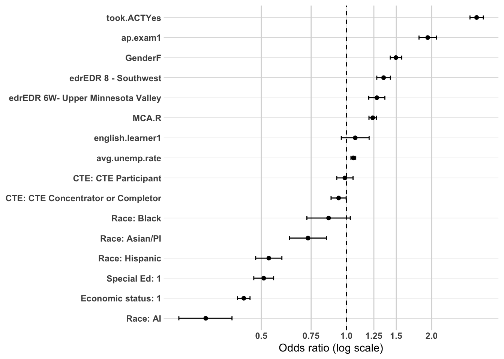
Summary of Multivariate Confirmation Analysis
Three hierarchical logistic regression models were estimated to examine the independent and cumulative associations of demographic characteristics, high school characteristics and local labor market conditions, and high school accomplishments with postsecondary graduation (N=38,754). Each successive model added a theoretically motivated block of variables, allowing assessment of whether each block contributed independent explanatory power beyond previous blocks and how earlier coefficients changed with the addition of new variables.
Model Fit Progression
Model fit improved substantially across all three specifications, with the largest improvement occurring with the addition of high school accomplishment variables in Model 3. The demographic baseline alone explained a meaningful proportion of variance in postsecondary graduation (Nagelkerke R²=0.195), notably higher than the corresponding baseline in the workforce participation analysis (Nagelkerke R²=0.006), confirming that demographic characteristics are far more predictive of whether someone completes postsecondary education than of where they ultimately work.
Model
Variables Added
AIC
Δ AIC
Nagelkerke R²
1
Demographics
46,857
—
0.195
2
+ HS Characteristics and Labor Market
46,739
-117.80
0.199
3
+ HS Accomplishments
43,777
-2,961.80
0.283
Key Findings Across Models
Demographic characteristics are powerful and persistent predictors of postsecondary graduation, with economic status and special education status showing the largest effect sizes in the baseline model. Economically disadvantaged graduates face odds of postsecondary graduation less than 40% those of non-disadvantaged graduates in the baseline model, attenuating to 43% after high school accomplishment controls — a substantial attenuation but with a large and persistent independent effect remaining. Special education status shows the most dramatic attenuation across the three models, with odds ratios moving from 0.275 in the baseline to 0.510 in Model 3, confirming that much of the special education graduation disadvantage is explained by lower academic achievement and college preparedness but that a substantial independent barrier persists even after these controls.
Racial and ethnic disparities show divergent patterns across the three models. AI and Hispanic graduates show large, persistent, and highly significant negative associations with postsecondary graduation across all three models — AI graduates show odds of graduation approximately 30% those of White graduates even after all controls are introduced, and Hispanic graduates show odds approximately 53% those of White graduates. Black and Asian/PI graduates show smaller and more attenuating associations, with Black graduates reaching non-significance in Model 3, suggesting their lower graduation rates are largely but not fully explained by differences in academic preparation. The persistence of AI and Hispanic disparities through all model specifications signals the presence of structural barriers to postsecondary completion for these groups that operate independently of academic preparation and geographic context.
Geographic and labor market variables show meaningful independent associations with postsecondary graduation, in contrast to their negligible role in the workforce participation analysis. Both EDR 6W Upper Minnesota Valley and EDR 8 Southwest show consistently positive and significant associations with graduation across all three models, strengthening rather than attenuating with the addition of high school accomplishment variables. Average unemployment rate shows a significant negative association in Model 2 that reverses to a significant positive association in Model 3 — once academic preparation is controlled, higher local unemployment is associated with higher graduation odds, consistent with the opportunity cost hypothesis that scarce local employment opportunities make postsecondary completion more attractive.
High school accomplishment variables dominate the prediction of postsecondary graduation, producing by far the largest single improvement in model fit (ΔAIC=-2,961.80). ACT participation is the single most powerful predictor in the entire analysis (OR=2.887), followed by AP exam participation (OR=1.938) and MCA Reading score (OR=1.238). In direct contrast to the workforce participation models where these variables were associated with lower regional employment, here they are strongly and positively associated with postsecondary graduation — confirming that the same academic preparation mechanisms that sort students away from the regional workforce simultaneously sort them toward postsecondary completion. CTE engagement shows minimal independent association with postsecondary graduation once other accomplishment variables are controlled, a notable contrast to its dominant role in predicting regional workforce retention.
Overall Conclusions
The three-model hierarchical analysis confirms that postsecondary graduation in Southwest Minnesota is shaped by a sequential sorting process in which demographic characteristics establish large baseline disparities, geographic and labor market context adds meaningful independent explanatory power, and high school accomplishment variables — particularly ACT participation and AP exam — dominate the prediction of graduation outcomes. The contrast with the workforce participation analysis is striking and substantively important: the same variables that most strongly predict postsecondary graduation — ACT participation, AP exam, and high MCA Reading scores — are the same variables most strongly associated with non-regional employment in the workforce participation models. This confirms that the academic preparation sorting mechanism operates simultaneously to increase postsecondary completion and decrease regional workforce retention, representing a fundamental tension in regional education and workforce development policy that cannot be resolved by focusing on either outcome alone. The persistent demographic disparities — particularly for AI, Hispanic, economically disadvantaged, and special education graduates — signal the need for targeted interventions that address access barriers at multiple stages of the postsecondary pathway rather than relying solely on academic preparation improvements.
Overview Model 1 establishes the demographic baseline for predicting bachelor degree or higher attainment among college completers (N=22,140). The model includes gender, race/ethnicity, economic status, special education status, and English learner status. VIF values were all well below 2.0, indicating no multicollinearity concerns. The Hosmer-Lemeshow test indicates acceptable model fit (χ²=5.29, df=4, p=0.259). The model explains a moderate proportion of variance in the outcome (Nagelkerke R²=0.111), notably lower than the postsecondary graduation baseline (Nagelkerke R²=0.195), suggesting that demographic characteristics are somewhat less predictive of credential level among completers than of whether someone completes postsecondary at all.
Gender Female completers show significantly higher odds of attaining a bachelor degree or higher compared to male completers (OR=1.460, 95% CI [1.379, 1.546], p<0.001), confirming the bivariate finding that females are substantially more likely to pursue and complete higher credentials. This is the strongest positive association in the baseline model and is consistent with the female academic pathway advantage identified throughout the analysis.
Race/Ethnicity Race/ethnicity associations in this model are notably different in pattern from those observed in the postsecondary graduation models. Black completers show significantly higher odds of bachelor degree or higher attainment relative to White completers (OR=1.315, 95% CI [1.012, 1.715], p=0.041), a finding that contrasts sharply with the lower postsecondary graduation odds observed for Black graduates in the graduation models. This suggests that among those who do complete postsecondary education, Black completers are more likely than White completers to have pursued and completed a bachelor degree or higher credential. Hispanic completers show significantly lower odds of bachelor degree attainment (OR=0.657, 95% CI [0.552, 0.782], p<0.001), consistent with the concentration of Hispanic completers in sub-baccalaureate pathways identified in the bivariate analysis. AI and Asian/PI completers show no significant difference from White completers (p=0.120 and p=0.125 respectively), though the wide confidence intervals for AI graduates reflect small sample sizes among completers and warrant cautious interpretation.
Economic Status Economically disadvantaged completers show significantly lower odds of bachelor degree or higher attainment than non-disadvantaged completers (OR=0.468, 95% CI [0.437, 0.502], p<0.001). Even among those who successfully complete postsecondary education, economic disadvantage remains a powerful barrier to attaining higher credentials, reflecting the concentration of economically disadvantaged completers in shorter-term sub-baccalaureate pathways at regional public 2-year institutions.
Special Education Status Special education completers show dramatically lower odds of bachelor degree or higher attainment than non-special education completers (OR=0.171, 95% CI [0.148, 0.198], p<0.001), the lowest odds ratio observed for any predictor in this model. Among college completers, special education graduates face odds of attaining a bachelor degree or higher that are less than 20% those of non-special education completers — a striking finding that reflects the near-complete concentration of special education completers in sub-baccalaureate credential pathways.
English Learner Status English learner completers show significantly lower odds of bachelor degree or higher attainment than non-English learner completers (OR=0.520, 95% CI [0.426, 0.634], p<0.001). This finding contrasts with the non-significant English learner association in the postsecondary graduation Model 3, suggesting that while English learner status does not independently predict whether someone completes postsecondary education once academic preparation is controlled, among those who do complete it is a meaningful predictor of credential level — English learner completers are concentrated in sub-baccalaureate pathways at regional institutions.
Summary The demographic baseline model for highest credential level reveals a distinct pattern of associations compared to the postsecondary graduation models. Special education status shows the most extreme negative association (OR=0.171), reflecting the near-complete concentration of special education completers in sub-baccalaureate pathways. Economic status and English learner status also show strong negative associations, while gender shows a strong positive association with females considerably more likely to attain bachelor degrees or higher. The most notable finding is the positive association for Black completers — a reversal from the graduation models that suggests Black students who do complete postsecondary education are more likely to have pursued higher credential pathways. The Nagelkerke R² of 0.111 confirms that demographic characteristics explain a meaningful but incomplete portion of the variance in credential level among completers, establishing the need for high school characteristic and accomplishment variables in subsequent blocks.
Hosmer and Lemeshow goodness of fit (GOF) test
data: model_highest_cred_level_1$y, fitted(model_highest_cred_level_1)
X-squared = 5.2893, df = 4, p-value = 0.2589
or_plot <-tidy(model_highest_cred_level_1, conf.int =TRUE, exponentiate =TRUE) %>%filter(term !="(Intercept)") %>%mutate(# Make labels nicer (edit these replacements to match your exact factor labels)term =str_replace_all(term, c("RaceEthnicity"="Race: ","economic.status"="Economic status: ","SpecialEdStatus"="Special Ed: ","pseo.participant"="PSEO: ","cte.achievement"="CTE: ","MCA.M"="MCA Math","highest.cred.level"="Highest credential" )),# Put most important effects near the top (optional: tweak ordering later)term =fct_reorder(term, estimate) )ggplot(or_plot, aes(x = estimate, y = term)) +geom_vline(xintercept =1, linetype ="dashed") +geom_vline(xintercept =c(0.5, 0.75, 1.25, 1.5, 2),color ="grey85") +geom_point() +geom_errorbar(aes(xmin = conf.low, xmax = conf.high),orientation ="y",width =0.2 ) +scale_x_log10(breaks =c(0.5, 0.75, 1, 1.25, 1.5, 2),labels =c("0.5", "0.75", "1.0", "1.25", "1.5", "2.0") ) + theme_line +labs(x ="Odds ratio (log scale)",y =NULL )
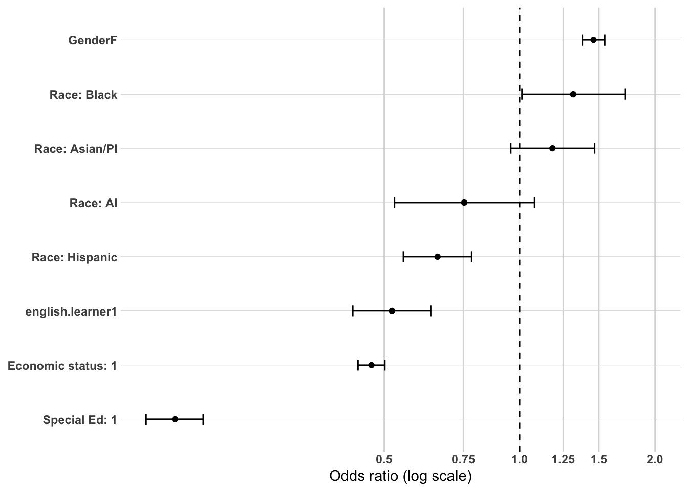
Model 2 - High School Characteristics and Local Labor Market
Overview Model 2 adds EDR and average local unemployment rate to the demographic baseline, maintaining the same sample of 22,140 college completers. VIF values remained well below 2.0 for all predictors, confirming no multicollinearity concerns. Model fit improved meaningfully over the demographic baseline (ΔAIC=-78.92, Nagelkerke R²=0.116), and the Hosmer-Lemeshow test indicates good model fit (χ²=12.85, df=8, p=0.117).
Stability of Demographic Coefficients Demographic coefficients from Model 1 show strong stability with the addition of EDR and unemployment rate. Gender (OR=1.458), economic status (OR=0.477), special education status (OR=0.173), and English learner status (OR=0.508) all remain virtually unchanged from their Model 1 estimates. Black completers attenuate slightly to marginal non-significance (OR=1.251, p=0.096), while Hispanic completers show a slight strengthening of the negative association (OR from 0.657 to 0.632). The overall stability of demographic coefficients confirms that these associations are not attributable to geographic sorting or local labor market conditions.
EDR Both EDR variables show significant associations with credential level, but in the opposite direction from what was observed in the postsecondary graduation models. EDR 6W Upper Minnesota Valley shows significantly lower odds of bachelor degree or higher attainment relative to EDR 6E Southwest Central (OR=0.691, 95% CI [0.638, 0.749], p<0.001), and EDR 8 Southwest also shows lower odds (OR=0.923, 95% CI [0.861, 0.989], p=0.024). This reversal from the graduation models is substantively meaningful — while EDR 6W and EDR 8 graduates show higher odds of completing postsecondary education than EDR 6E graduates, among those who do complete, EDR 6E graduates are more likely to attain bachelor degrees or higher. This is consistent with EDR 6E having a stronger academic pathway orientation and greater proximity to 4-year institutions, while EDR 6W and EDR 8 completers are more concentrated in sub-baccalaureate credentials at regional public 2-year institutions.
Average Unemployment Rate Average local unemployment rate shows no significant association with credential level among college completers (OR=0.992, 95% CI [0.969, 1.017], p=0.532). Once demographic characteristics and EDR are controlled, local labor market conditions do not independently predict whether completers attain sub- baccalaureate or bachelor degree or higher credentials.
Summary The addition of EDR and average unemployment rate produces a meaningful improvement in model fit over the demographic baseline (ΔAIC=-78.92). EDR emerges as a meaningful predictor of credential level among completers, with EDR 6W and EDR 8 graduates showing lower odds of bachelor degree attainment than EDR 6E graduates — a finding that reverses the direction observed in the graduation models and confirms the stronger sub-baccalaureate orientation of completers from those subregions. Average unemployment rate contributes no independent explanatory power. The stability of demographic coefficients confirms that the substantial barriers to bachelor degree attainment associated with economic disadvantage, special education status, and English learner status are not attributable to geographic sorting. The Nagelkerke R² of 0.116 confirms that demographic and geographic variables together explain a meaningful but incomplete portion of the variance in credential level, with high school accomplishment variables expected to add substantial additional explanatory power in Block 3.
Hosmer and Lemeshow goodness of fit (GOF) test
data: model_highest_cred_level_2$y, fitted(model_highest_cred_level_2)
X-squared = 12.851, df = 8, p-value = 0.1171
or_plot <-tidy(model_highest_cred_level_2, conf.int =TRUE, exponentiate =TRUE) %>%filter(term !="(Intercept)") %>%mutate(# Make labels nicer (edit these replacements to match your exact factor labels)term =str_replace_all(term, c("RaceEthnicity"="Race: ","economic.status"="Economic status: ","SpecialEdStatus"="Special Ed: ","pseo.participant"="PSEO: ","cte.achievement"="CTE: ","MCA.M"="MCA Math","highest.cred.level"="Highest credential" )),# Put most important effects near the top (optional: tweak ordering later)term =fct_reorder(term, estimate) )ggplot(or_plot, aes(x = estimate, y = term)) +geom_vline(xintercept =1, linetype ="dashed") +geom_vline(xintercept =c(0.5, 0.75, 1.25, 1.5, 2),color ="grey85") +geom_point() +geom_errorbar(aes(xmin = conf.low, xmax = conf.high),orientation ="y",width =0.2 ) +scale_x_log10(breaks =c(0.5, 0.75, 1, 1.25, 1.5, 2),labels =c("0.5", "0.75", "1.0", "1.25", "1.5", "2.0") ) + theme_line +labs(x ="Odds ratio (log scale)",y =NULL )
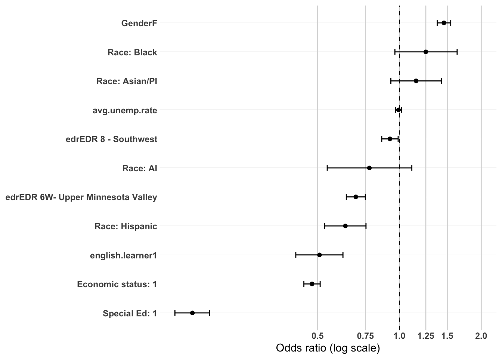
Model 3 - High School Accomplishments
Overview Model 3 adds took.ACT, ap.exam, cte.achievement, and MCA.R to the previous model, maintaining the same sample of 22,140 college completers. The addition of high school accomplishment variables produces a very large improvement in model fit (ΔAIC=-3,890.31, Nagelkerke R²=0.317), the largest single block improvement observed across the entire postsecondary multivariate analysis. VIF values remained well below 2.0 for all predictors, indicating no multicollinearity concerns. The Hosmer-Lemeshow test indicates marginal misfit (χ²=21.08, df=8, p=0.007), which as with the postsecondary graduation Model 3 is most likely attributable to the large sample size making the test sensitive to trivial deviations from perfect fit. The very large improvement in AIC and Nagelkerke R² provide complementary evidence of substantial model improvement.
Stability and Attenuation of Previous Coefficients The addition of high school accomplishment variables produces meaningful changes in several coefficients from Model 2.
Gender attenuates modestly (OR from 1.458 to 1.203), remaining highly significant (p<0.001). Females continue to show higher odds of bachelor degree attainment even after controlling for academic achievement and CTE engagement, suggesting that the female credential attainment advantage reflects factors beyond academic preparation alone.
Economic status attenuates meaningfully (OR from 0.477 to 0.557), remaining highly significant (p<0.001). The attenuation confirms that some of the economic disadvantage effect on credential level operates through lower academic achievement and college preparedness, but a substantial independent barrier to bachelor degree attainment persists after these controls.
Special education status attenuates substantially (OR from 0.173 to 0.453), remaining highly significant (p<0.001). As with the graduation models, the large attenuation confirms that much of the special education disadvantage in credential attainment is explained by lower academic achievement and college preparedness, but a strong independent negative effect persists.
English learner status attenuates to non-significance (OR from 0.508 to 0.875, p=0.243), suggesting that the English learner credential disadvantage observed in Models 1 and 2 was largely attributable to lower academic achievement and college preparedness rather than an independent effect of language status.
Black completers show a strengthening of the positive association (OR from 1.251 to 1.726, p<0.001), becoming more strongly and significantly positive after high school accomplishments are controlled. This is a substantively important finding — Black completers show notably higher odds of bachelor degree attainment than White completers even after controlling for academic achievement indicators, suggesting that among those who complete postsecondary education Black graduates are disproportionately concentrated in bachelor degree or higher pathways independent of their academic preparation.
Hispanic completers attenuate modestly (OR from 0.632 to 0.702, p<0.001), remaining significantly negative, confirming a persistent concentration in sub-baccalaureate pathways that is not fully explained by academic preparation differences.
EDR 6W Upper Minnesota Valley attenuates but remains significantly negative (OR from 0.691 to 0.880, p=0.005), while EDR 8 Southwest attenuates to marginal non-significance (OR from 0.923 to 1.078, p=0.056). The attenuation of both EDR associations confirms that part of the sub-baccalaureate orientation of EDR 6W and EDR 8 completers was explained by their lower academic achievement and college preparedness relative to EDR 6E completers.
Average unemployment rate reverses direction and becomes significantly positive (OR from 0.992 to 1.084, p<0.001), mirroring the reversal observed in the postsecondary graduation Model 3. Once academic preparation is controlled, higher local unemployment is associated with higher odds of bachelor degree attainment among completers, consistent with the opportunity cost mechanism — when local employment opportunities are scarce, completers are more likely to invest in higher credentials.
ACT Participation ACT takers show dramatically higher odds of bachelor degree or higher attainment than non-ACT takers among college completers (OR=5.191, 95% CI [4.723, 5.710], p<0.001), the largest positive association observed for any variable across the entire postsecondary multivariate analysis. This confirms that ACT participation is an extraordinarily powerful predictor of credential level among completers, capturing the near-complete sorting of ACT takers into bachelor degree or higher pathways and non-ACT takers into sub-baccalaureate pathways.
AP Exam Participation AP exam participants show significantly higher odds of bachelor degree or higher attainment than non-participants (OR=2.661, 95% CI [2.435, 2.911], p<0.001), the second largest positive association in the model. AP exam participation is a powerful independent predictor of credential level even after controlling for ACT participation and MCA Reading score, confirming that early college- level academic engagement strongly predicts higher credential attainment among completers.
CTE Achievement CTE engagement shows a strong and significant inverse relationship with bachelor degree attainment among completers, in clear contrast to its non-significant association with postsecondary graduation. CTE Concentrators or Completors show substantially lower odds of bachelor degree attainment than No CTE completers (OR=0.527, 95% CI [0.483, 0.574], p<0.001), followed by CTE Participants (OR=0.733, 95% CI [0.668, 0.803], p<0.001). A clear dose-response pattern is evident — higher CTE engagement is associated with progressively lower odds of bachelor degree attainment among completers — confirming the strong concentration of CTE-engaged completers in sub-baccalaureate credential pathways identified throughout the descriptive analysis.
MCA Reading Higher MCA Reading scores are associated with significantly higher odds of bachelor degree or higher attainment among completers (OR=1.756, 95% CI [1.675, 1.841], p<0.001), the largest effect size observed for any continuous variable across the postsecondary multivariate analysis. MCA Reading adds substantial independent explanatory power beyond ACT participation and AP exam, confirming that reading proficiency is a critical and independent predictor of credential level among completers.
Summary The addition of high school accomplishment variables produces the largest single improvement in model fit observed across the entire postsecondary multivariate analysis (ΔAIC=-3,890.31, ΔNagelkerke R²=+0.201), confirming that high school preparation is the dominant predictor of credential level among college completers. ACT participation (OR=5.191), MCA Reading (OR=1.756), and AP exam participation (OR=2.661) are the three strongest positive predictors, collectively capturing the near- complete sorting of academically prepared graduates into bachelor degree or higher pathways. CTE engagement shows a strong and significant inverse dose-response relationship with credential level, confirming the concentration of CTE-engaged completers in sub-baccalaureate pathways. The substantial attenuation of economic status, special education status, and English learner status coefficients confirms that these groups’ lower credential attainment is partly explained by differences in academic preparation, but persistent independent effects of economic disadvantage and special education status remain. The strengthening of the Black completer positive association after academic controls is a notable finding that warrants further investigation — Black completers show substantially higher odds of bachelor degree attainment than White completers even after controlling for academic preparation, suggesting that among those who enter and complete postsecondary education Black graduates disproportionately pursue and complete higher credential pathways.
Hosmer and Lemeshow goodness of fit (GOF) test
data: model_highest_cred_level_3$y, fitted(model_highest_cred_level_3)
X-squared = 21.083, df = 8, p-value = 0.006931
or_plot <-tidy(model_highest_cred_level_3, conf.int =TRUE, exponentiate =TRUE) %>%filter(term !="(Intercept)") %>%mutate(# Make labels nicer (edit these replacements to match your exact factor labels)term =str_replace_all(term, c("RaceEthnicity"="Race: ","economic.status"="Economic status: ","SpecialEdStatus"="Special Ed: ","pseo.participant"="PSEO: ","cte.achievement"="CTE: ","MCA.M"="MCA Math","highest.cred.level"="Highest credential" )),# Put most important effects near the top (optional: tweak ordering later)term =fct_reorder(term, estimate) )ggplot(or_plot, aes(x = estimate, y = term)) +geom_vline(xintercept =1, linetype ="dashed") +geom_vline(xintercept =c(0.5, 0.75, 1.25, 1.5, 2),color ="grey85") +geom_point() +geom_errorbar(aes(xmin = conf.low, xmax = conf.high),orientation ="y",width =0.2 ) +scale_x_log10(breaks =c(0.5, 0.75, 1, 1.25, 1.5, 2),labels =c("0.5", "0.75", "1.0", "1.25", "1.5", "2.0") ) + theme_line +labs(x ="Odds ratio (log scale)",y =NULL )
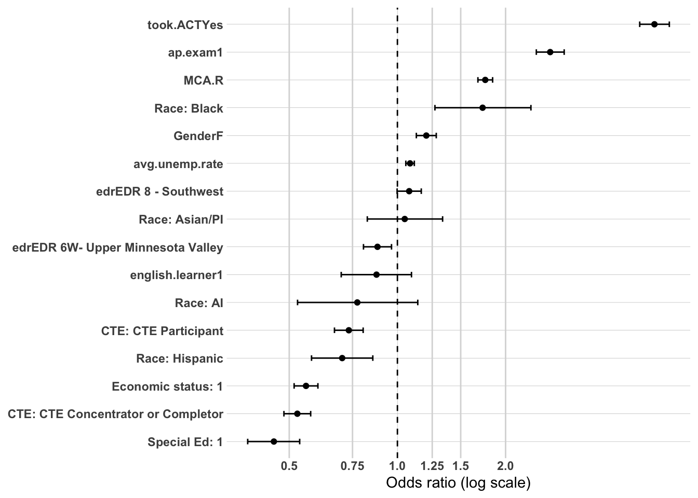
Summary of Multivariate Confirmation Analysis
Three hierarchical logistic regression models were estimated to examine the independent and cumulative associations of demographic characteristics, high school characteristics and local labor market conditions, and high school accomplishments with bachelor degree or higher attainment among college completers (N=22,140). Each successive model added a theoretically motivated block of variables, allowing assessment of whether each block contributed independent explanatory power beyond previous blocks and how earlier coefficients changed with the addition of new variables.
Model Fit Progression
Model fit improved substantially across all three specifications, with by far the largest improvement occurring with the addition of high school accomplishment variables in Model 3. The demographic baseline explained a moderate proportion of variance in credential level (Nagelkerke R²=0.111), and the full model explains approximately 32% of variance — the highest Nagelkerke R² achieved across any of the three postsecondary multivariate analyses.
Model
Variables Added
AIC
Δ AIC
Nagelkerke R²
1
Demographics
27,420
—
0.111
2
+ HS Characteristics and Labor Market
27,341
-78.92
0.116
3
+ HS Accomplishments
23,451
-3,890.31
0.317
Key Findings Across Models
Demographic characteristics show strong and persistent associations with credential level across all three models, but with a notably different pattern than observed in the postsecondary graduation analysis. Economic status and special education status again show the largest negative associations in the baseline model, but their effect sizes are considerably smaller here than in the graduation models — reflecting that among those who do complete postsecondary education, economic disadvantage and special education status remain meaningful barriers to higher credential attainment but are less extreme than the barriers they pose to completing postsecondary at all. Special education status shows the most dramatic attenuation across the three models (OR from 0.171 to 0.453), confirming that much of the special education credential disadvantage is explained by lower academic achievement and college preparedness, while a substantial independent barrier to bachelor degree attainment persists.
The race/ethnicity pattern in this analysis is particularly distinctive and warrants careful attention. Black completers show a consistently positive association with bachelor degree attainment across all three models that strengthens rather than attenuates with the addition of high school accomplishment variables — reaching OR=1.726 (p<0.001) in Model 3. This finding, which contrasts sharply with the lower postsecondary graduation odds observed for Black graduates in the graduation analysis, suggests a selectivity effect — Black students who successfully navigate the barriers to postsecondary completion are disproportionately concentrated in bachelor degree or higher pathways, independent of their academic preparation. Hispanic completers show a persistent negative association across all three models (final OR=0.702), confirming their concentration in sub-baccalaureate pathways that is not fully explained by demographic characteristics, geographic context, or academic preparation. AI and Asian/PI completers show no significant associations in any model, likely reflecting small sample sizes among completers rather than an absence of real patterns.
Geographic variables show a reversal in direction compared to the graduation analysis. EDR 6W Upper Minnesota Valley shows significantly lower odds of bachelor degree attainment relative to EDR 6E across all three models, while EDR 8 Southwest attenuates to marginal non-significance in Model 3. This confirms that EDR 6E Southwest Central has a stronger bachelor degree orientation among its completers — a finding consistent with its greater proximity to 4-year institutions and stronger academic pathway culture — while EDR 6W completers are more concentrated in sub-baccalaureate credentials at regional public 2-year institutions. Average unemployment rate reverses direction in Model 3, becoming significantly positive after academic preparation is controlled, consistent with the opportunity cost mechanism observed in the graduation analysis.
High school accomplishment variables dominate the prediction of credential level among completers, producing the largest single block improvement in model fit observed across the entire postsecondary multivariate analysis (ΔAIC= -3,890.31). ACT participation is again the single most powerful predictor (OR=5.191), with an effect size substantially larger than observed in any other model in the analysis — reflecting the near-complete sorting of ACT takers into bachelor degree or higher pathways among completers. MCA Reading (OR=1.756) and AP exam participation (OR=2.661) add large independent effects beyond ACT participation. CTE engagement shows a strong and significant inverse dose-response relationship with credential level in this model, in contrast to its minimal association with postsecondary graduation — confirming that CTE engagement does not prevent postsecondary completion but strongly shapes the type of credential pursued, concentrating CTE-engaged completers in sub-baccalaureate pathways.
Overall Conclusions
The three-model hierarchical analysis confirms that credential level among college completers is shaped by a sequential sorting process in which demographic characteristics establish meaningful baseline disparities, geographic context adds modest independent explanatory power, and high school accomplishment variables — particularly ACT participation, MCA Reading, and AP exam — dominate the prediction of credential outcomes. The contrast with the postsecondary graduation analysis is instructive — while the same academic preparation variables predict both graduation and credential level, their effect sizes are considerably larger for credential level, confirming that high school preparation does not merely predict whether someone completes postsecondary education but is the primary mechanism through which students are sorted into sub-baccalaureate versus bachelor degree or higher pathways. The CTE inverse relationship with credential level, combined with its minimal association with graduation, confirms the two-pathway structure identified throughout the analysis — CTE engagement leads to sub-baccalaureate completion while academic preparation leads to bachelor degree or higher completion, and these pathways are largely non-overlapping among college completers. The distinctive Black completer finding — stronger bachelor degree attainment odds that increase after academic controls — represents the most unexpected finding in this analysis and suggests that the barriers Black students face at the postsecondary access stage may create a selective pool of completers who are disproportionately oriented toward higher credential pathways.
Modeling - Post-secondary Graduation Location
master.model.ps.grad.location <- master.model.ps.grad %>%filter(ps.grad ==1, ps.grad.location !="Did not graduate ps") %>%mutate(ps.grad.location =ifelse(ps.grad.location %in%c("PS grad region", "PS grad Region"), 1, 0))levels(master.model.ps.grad.location$ps.grad.location)
NULL
Model 1 - Demographic Characteristics (Baseline)
Overview Model 1 establishes the demographic baseline for predicting regional postsecondary graduation among college completers (N=22,069). The model includes gender, race/ethnicity, economic status, special education status, and English learner status. VIF values were all well below 2.0, indicating no multicollinearity concerns. The Hosmer-Lemeshow test indicates good model fit (χ²=2.00, df=2, p=0.368). The model explains a modest proportion of variance in the outcome (Nagelkerke R²=0.050), considerably lower than the demographic baselines for postsecondary graduation (Nagelkerke R²=0.195) and credential level (Nagelkerke R²=0.111), confirming that demographic characteristics are less predictive of where completers graduate than of whether they graduate or what credential they attain.
A striking and substantively important feature of this model is the reversal in direction of virtually all demographic associations relative to the credential level models. The groups least likely to attain bachelor degrees or higher — economically disadvantaged, special education, English learner, and Hispanic completers — are the groups most likely to graduate from regional institutions. This reversal is entirely consistent with the two-pathway structure identified throughout the analysis and provides multivariate confirmation that demographic disadvantage is associated with regional postsecondary anchoring among completers.
Gender Female completers show significantly higher odds of regional graduation compared to male completers (OR=1.242, 95% CI [1.170, 1.319], p<0.001). This finding reverses the direction observed in the workforce participation models where females showed lower odds of regional employment, and reflects the concentration of female completers in regional public 2-year institutions for certain program areas — particularly health sciences and education — that are well represented at regional institutions.
Race/Ethnicity Hispanic completers show the strongest positive race/ethnicity association with regional graduation (OR=1.914, 95% CI [1.619, 2.263], p<0.001), consistent with the strong regional graduation rates observed for Hispanic completers throughout the bivariate analysis and reflecting the role of community ties and geographic constraints in anchoring Hispanic graduates to regional institutions. Asian/PI completers also show significantly higher odds of regional graduation than White completers (OR=1.377, 95% CI [1.120, 1.689], p=0.002), a finding that contrasts with their non-significant credential level associations and suggests geographic concentration in regional institutions among Asian/PI completers. AI and Black completers show no significant difference from White completers (p=0.170 and p=0.450 respectively), likely reflecting small sample sizes among completers from these groups.
Economic Status Economically disadvantaged completers show significantly higher odds of regional graduation than non-disadvantaged completers (OR=1.525, 95% CI [1.422, 1.636], p<0.001), directly reversing the strong negative association observed in the credential level models. This confirms that economic disadvantage is a powerful predictor of regional postsecondary anchoring among completers, reflecting the role of financial constraints, community ties, and concentration in regional public 2-year institutions in keeping economically disadvantaged completers within the region.
Special Education Status Special education completers show the strongest positive association with regional graduation of any demographic predictor (OR=2.118, 95% CI [1.873, 2.395], p<0.001). Among college completers, special education graduates are more than twice as likely as non-special education graduates to have graduated from a regional institution, reflecting their near-complete concentration in sub- baccalaureate programs at regional public 2-year institutions identified in the credential level analysis.
English Learner Status English learner completers show significantly higher odds of regional graduation than non-English learner completers (OR=1.890, 95% CI [1.581, 2.263], p<0.001), the second strongest positive association in the baseline model. This finding is consistent with the role of community ties, language community concentration, and geographic constraints in anchoring English learner completers to regional institutions. The contrast with the non-significant English learner associations in the credential level Model 3 suggests that language status predicts where completers graduate more strongly than what credential they attain once academic preparation is controlled.
Summary The demographic baseline model for regional graduation location reveals a striking and consistent reversal of the patterns observed in the credential level models. Every significant demographic predictor associated with lower credential attainment — economic disadvantage, special education status, English learner status, and Hispanic race/ethnicity — is associated with higher odds of regional graduation among completers. This reversal provides multivariate confirmation of the two-pathway structure identified throughout the analysis — demographic disadvantage is associated with sub-baccalaureate credential attainment at regional institutions, while demographic advantage is associated with bachelor degree or higher attainment at non-regional institutions. The modest Nagelkerke R² (0.050) confirms that demographic characteristics alone explain relatively little of the variance in graduation location, establishing the need for high school characteristic and accomplishment variables in subsequent blocks to more fully account for regional graduation patterns.
Hosmer and Lemeshow goodness of fit (GOF) test
data: model_ps_grad_location_1$y, fitted(model_ps_grad_location_1)
X-squared = 1.9987, df = 2, p-value = 0.3681
or_plot <-tidy(model_ps_grad_location_1, conf.int =TRUE, exponentiate =TRUE) %>%filter(term !="(Intercept)") %>%mutate(# Make labels nicer (edit these replacements to match your exact factor labels)term =str_replace_all(term, c("RaceEthnicity"="Race: ","economic.status"="Economic status: ","SpecialEdStatus"="Special Ed: ","pseo.participant"="PSEO: ","cte.achievement"="CTE: ","MCA.M"="MCA Math","highest.cred.level"="Highest credential" )),# Put most important effects near the top (optional: tweak ordering later)term =fct_reorder(term, estimate) )ggplot(or_plot, aes(x = estimate, y = term)) +geom_vline(xintercept =1, linetype ="dashed") +geom_vline(xintercept =c(0.5, 0.75, 1.25, 1.5, 2),color ="grey85") +geom_point() +geom_errorbar(aes(xmin = conf.low, xmax = conf.high),orientation ="y",width =0.2 ) +scale_x_log10(breaks =c(0.5, 0.75, 1, 1.25, 1.5, 2),labels =c("0.5", "0.75", "1.0", "1.25", "1.5", "2.0") ) + theme_line +labs(x ="Odds ratio (log scale)",y =NULL )
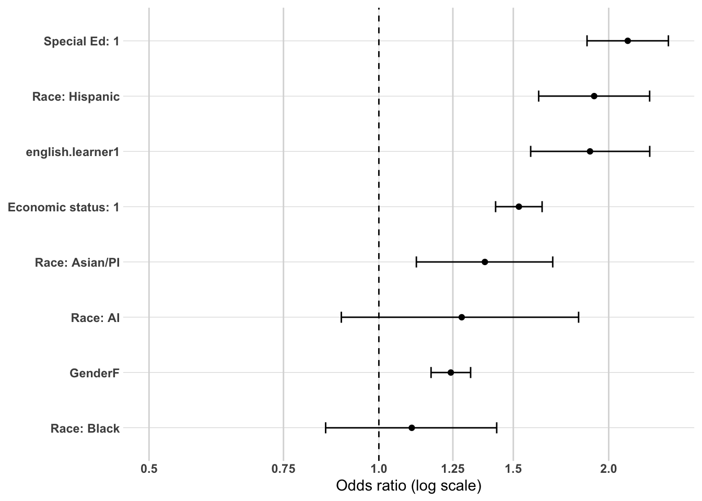
Model 2 - High School Characteristics and Local Labor Market
Overview Model 2 adds EDR and average local unemployment rate to the demographic baseline, maintaining the same sample of 22,069 college completers. VIF values remained well below 2.0 for all predictors, confirming no multicollinearity concerns. Model fit improved substantially over the demographic baseline (ΔAIC=-501.67, Nagelkerke R²=0.081), the largest single block improvement observed at the Block 2 stage across any of the three postsecondary multivariate analyses. This confirms that geographic subregion is a particularly powerful predictor of graduation location — more so than for postsecondary graduation or credential level. The Hosmer-Lemeshow test indicates some misfit (χ²=23.18, df=8, p=0.003), which is noted but not unexpected given the complexity of geographic sorting patterns.
Stability of Demographic Coefficients Demographic coefficients from Model 1 show general stability with the addition of EDR and unemployment rate, with a few notable changes. Economic status strengthens modestly (OR from 1.525 to 1.617), special education status strengthens modestly (OR from 2.118 to 2.252), and English learner status remains essentially unchanged (OR from 1.890 to 1.839). Gender remains significant and stable (OR=1.239). Hispanic completers attenuate modestly (OR from 1.914 to 1.809) while Asian/PI completers attenuate more substantially (OR from 1.377 to 1.285), suggesting some geographic confounding for these groups. Black completers attenuate to complete non-significance (OR=1.000, p=0.998), confirming that the small and non-significant Black association in Model 1 was entirely attributable to geographic distribution.
EDR EDR shows by far the largest associations of any variable in Model 2 and produces the most substantively important finding at this stage. EDR 6W Upper Minnesota Valley shows dramatically lower odds of regional graduation relative to EDR 6E Southwest Central (OR=0.368, 95% CI [0.335, 0.405], p<0.001) — the largest effect size observed for any predictor across the entire postsecondary graduation location analysis. EDR 8 Southwest also shows significantly lower odds of regional graduation (OR=0.870, 95% CI [0.811, 0.932], p<0.001), though the association is considerably weaker than for EDR 6W.
These findings are striking and require careful interpretation. EDR 6E Southwest Central — anchored by Marshall and the surrounding area — has the strongest regional postsecondary institutional infrastructure in Southwest Minnesota, including Minnesota West Community and Technical College campuses and Southwest Minnesota State University. Completers from EDR 6E are therefore far more likely to have graduated from a regional institution than completers from EDR 6W or EDR 8, which have less developed regional postsecondary infrastructure and whose completers must travel further to access regional institutions. This finding has direct implications for regional postsecondary investment strategy — the substantial EDR 6W disadvantage in regional graduation suggests that expanding regional postsecondary access in that subregion could meaningfully improve regional workforce retention.
Average Unemployment Rate Average local unemployment rate shows a small but significant positive association with regional graduation (OR=1.036, 95% CI [1.011, 1.061], p=0.005). Completers from areas with higher unemployment are modestly more likely to have graduated from regional institutions, consistent with the geographic constraint mechanism — higher local unemployment may reflect more economically constrained communities where students are less able to travel to non-regional institutions for postsecondary completion.
Summary The addition of EDR and average unemployment rate produces the largest Block 2 improvement in model fit observed across any of the three postsecondary multivariate analyses (ΔAIC=-501.67), confirming that geographic subregion is the dominant contextual predictor of graduation location. The EDR 6W finding is the most substantively important result in this model — completers from EDR 6W Upper Minnesota Valley show odds of regional graduation less than 40% those of EDR 6E completers, a dramatic difference that reflects the weaker regional postsecondary infrastructure in that subregion and has direct implications for regional investment strategy. Average unemployment rate adds a small but significant positive association consistent with the geographic constraint mechanism. The stability and strengthening of demographic associations confirms that the substantial regional graduation advantages of economically disadvantaged, special education, and English learner completers are not attributable to their geographic distribution within Southwest Minnesota but reflect genuine differences in postsecondary pathway orientation across demographic groups.
Hosmer and Lemeshow goodness of fit (GOF) test
data: model_ps_grad_location_2$y, fitted(model_ps_grad_location_2)
X-squared = 23.18, df = 8, p-value = 0.003141
or_plot <-tidy(model_ps_grad_location_2, conf.int =TRUE, exponentiate =TRUE) %>%filter(term !="(Intercept)") %>%mutate(# Make labels nicer (edit these replacements to match your exact factor labels)term =str_replace_all(term, c("RaceEthnicity"="Race: ","economic.status"="Economic status: ","SpecialEdStatus"="Special Ed: ","pseo.participant"="PSEO: ","cte.achievement"="CTE: ","MCA.M"="MCA Math","highest.cred.level"="Highest credential" )),# Put most important effects near the top (optional: tweak ordering later)term =fct_reorder(term, estimate) )ggplot(or_plot, aes(x = estimate, y = term)) +geom_vline(xintercept =1, linetype ="dashed") +geom_vline(xintercept =c(0.5, 0.75, 1.25, 1.5, 2),color ="grey85") +geom_point() +geom_errorbar(aes(xmin = conf.low, xmax = conf.high),orientation ="y",width =0.2 ) +scale_x_log10(breaks =c(0.5, 0.75, 1, 1.25, 1.5, 2),labels =c("0.5", "0.75", "1.0", "1.25", "1.5", "2.0") ) + theme_line +labs(x ="Odds ratio (log scale)",y =NULL )
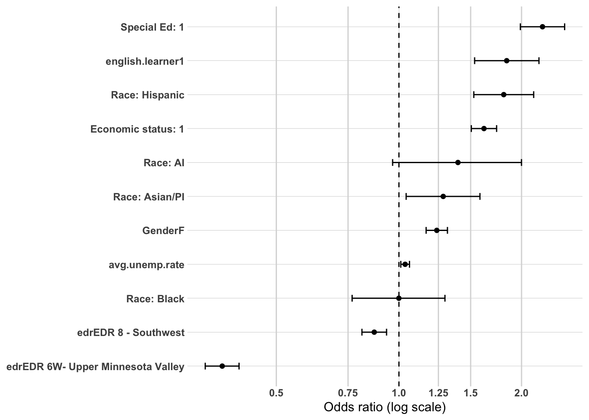
Model 3 - High School Accomplishments
Overview Model 3 adds took.ACT, ap.exam, cte.achievement, and MCA.R to the previous model, maintaining the same sample of 22,069 college completers. The addition of high school accomplishment variables produces a meaningful improvement in model fit (ΔAIC=-769.17, Nagelkerke R²=0.127), though notably smaller than the corresponding block improvements observed for postsecondary graduation (ΔAIC=-2,961.80) and credential level (ΔAIC=-3,890.31). This confirms that while high school accomplishments are meaningful predictors of graduation location, geographic and demographic factors play a relatively larger role in determining where completers graduate compared to the other postsecondary outcomes. VIF values remained well below 2.0 for all predictors, indicating no multicollinearity concerns. The Hosmer-Lemeshow test indicates significant misfit (χ²=36.35, df=8, p<0.001), which as with the graduation Model 3 is most likely attributable to the complexity of geographic sorting patterns and the sensitivity of the test to sample size rather than substantive model inadequacy.
Stability and Attenuation of Previous Coefficients The addition of high school accomplishment variables produces meaningful changes in several coefficients from Model 2.
Economic status attenuates modestly (OR from 1.617 to 1.452), remaining highly significant (p<0.001). The attenuation confirms that some of the economic disadvantage association with regional graduation operates through lower academic achievement and college preparedness, but a substantial independent effect of economic disadvantage on regional graduation persists after these controls.
Special education status attenuates substantially (OR from 2.252 to 1.345), remaining significant (p<0.001). The large attenuation confirms that much of the special education regional graduation advantage was explained by the lower academic achievement and higher CTE engagement of special education completers rather than special education status itself. The persistent positive association after these controls indicates that special education status has an independent regional anchoring effect beyond its correlation with academic preparation.
English learner status attenuates modestly (OR from 1.839 to 1.425), remaining significant (p<0.001). English learner completers continue to show substantially higher odds of regional graduation even after controlling for academic achievement and CTE engagement, confirming that community ties and geographic constraints independently anchor English learner completers to regional institutions.
Gender strengthens modestly (OR from 1.239 to 1.380), remaining highly significant (p<0.001). The strengthening suggests that once academic preparation is controlled, females show even stronger regional graduation odds than observed in Model 2, reflecting the concentration of female completers in regionally-oriented program areas beyond what is explained by their academic preparation profile.
Hispanic completers remain strongly positive and significant (OR=1.738, p<0.001), with minimal attenuation from Model 2 (OR=1.809). This confirms that Hispanic completers’ strong regional graduation advantage reflects community ties and geographic constraints that operate largely independently of academic preparation.
Asian/PI completers remain significant (OR=1.376, p=0.003) with minimal change from Model 2, while Black completers remain non-significant (OR=0.882, p=0.369) throughout.
EDR associations remain the dominant geographic predictors and show minimal attenuation with the addition of high school accomplishments. EDR 6W Upper Minnesota Valley continues to show dramatically lower odds of regional graduation (OR=0.308, p<0.001) and EDR 8 Southwest continues to show significantly lower odds (OR=0.798, p<0.001). The stability of these associations confirms that the EDR graduation location patterns reflect genuine geographic infrastructure differences that are not explained by the academic preparation profile of completers from those subregions.
Average unemployment rate attenuates to complete non-significance (OR=1.000, p=0.988), suggesting its Model 2 association was largely attributable to the correlation between local labor market conditions and academic preparation rather than an independent effect on graduation location.
ACT Participation ACT takers show significantly lower odds of regional graduation than non-ACT takers among college completers (OR=0.603, 95% CI [0.554, 0.657], p<0.001), confirming that ACT participation is a powerful predictor of non-regional graduation even among those who complete postsecondary education. This association holds after controlling for AP exam participation, CTE engagement, and MCA Reading score, indicating that ACT participation captures an independent college preparedness dimension associated with geographic mobility beyond academic achievement alone.
AP Exam Participation AP exam participants show significantly lower odds of regional graduation than non-participants (OR=0.562, 95% CI [0.518, 0.609], p<0.001), the strongest negative association among the high school accomplishment variables. AP exam participation is a particularly powerful predictor of non-regional graduation among completers, consistent with its strong association with 4-year non-regional institution graduation identified throughout the descriptive analysis.
CTE Achievement CTE engagement shows a significant positive dose-response relationship with regional graduation among completers, mirroring the pattern observed in the workforce participation models. CTE Concentrators or Completors show significantly higher odds of regional graduation than No CTE completers (OR=1.324, 95% CI [1.221, 1.435], p<0.001), followed by CTE Participants (OR=1.207, 95% CI [1.108, 1.315], p<0.001). Higher CTE engagement is consistently associated with regional postsecondary anchoring even after controlling for demographic characteristics, geographic context, and academic achievement — confirming the independent regional anchoring effect of CTE engagement identified throughout the analysis.
MCA Reading Higher MCA Reading scores are associated with significantly lower odds of regional graduation among completers (OR=0.785, 95% CI [0.751, 0.820], p<0.001), confirming that reading proficiency is independently associated with geographic mobility in postsecondary completion. This association holds after controlling for ACT participation, AP exam, and CTE engagement, indicating that academic achievement captures an independent dimension of geographic sorting beyond college preparedness behaviors alone.
Summary The addition of high school accomplishment variables produces a meaningful improvement in model fit (ΔAIC=-769.17, ΔNagelkerke R²=+0.046), though the increment is considerably smaller than observed for the other two postsecondary outcomes. This confirms that graduation location is shaped more strongly by geographic and demographic factors than by high school preparation relative to the other postsecondary outcomes examined. The results nonetheless reveal a clear and consistent preparation sorting mechanism operating even within the college completer population — academic achievement and college preparedness indicators (ACT participation, AP exam, MCA Reading) are all significantly and independently associated with lower odds of regional graduation, while CTE engagement shows a positive dose-response relationship with regional graduation. The substantial attenuation of special education status and modest attenuation of economic status confirm that part of their regional graduation advantage is explained by lower academic achievement and higher CTE engagement, but persistent independent effects remain. The stability of EDR associations through all three models confirms that geographic infrastructure differences across Southwest Minnesota subregions are the dominant contextual predictor of where completers graduate, independent of who they are and what they did in high school.
Hosmer and Lemeshow goodness of fit (GOF) test
data: model_ps_grad_location_3$y, fitted(model_ps_grad_location_3)
X-squared = 36.346, df = 8, p-value = 1.518e-05
or_plot <-tidy(model_ps_grad_location_3, conf.int =TRUE, exponentiate =TRUE) %>%filter(term !="(Intercept)") %>%mutate(# Make labels nicer (edit these replacements to match your exact factor labels)term =str_replace_all(term, c("RaceEthnicity"="Race: ","economic.status"="Economic status: ","SpecialEdStatus"="Special Ed: ","pseo.participant"="PSEO: ","cte.achievement"="CTE: ","MCA.M"="MCA Math","highest.cred.level"="Highest credential" )),# Put most important effects near the top (optional: tweak ordering later)term =fct_reorder(term, estimate) )ggplot(or_plot, aes(x = estimate, y = term)) +geom_vline(xintercept =1, linetype ="dashed") +geom_vline(xintercept =c(0.5, 0.75, 1.25, 1.5, 2),color ="grey85") +geom_point() +geom_errorbar(aes(xmin = conf.low, xmax = conf.high),orientation ="y",width =0.2 ) +scale_x_log10(breaks =c(0.5, 0.75, 1, 1.25, 1.5, 2),labels =c("0.5", "0.75", "1.0", "1.25", "1.5", "2.0") ) + theme_line +labs(x ="Odds ratio (log scale)",y =NULL )
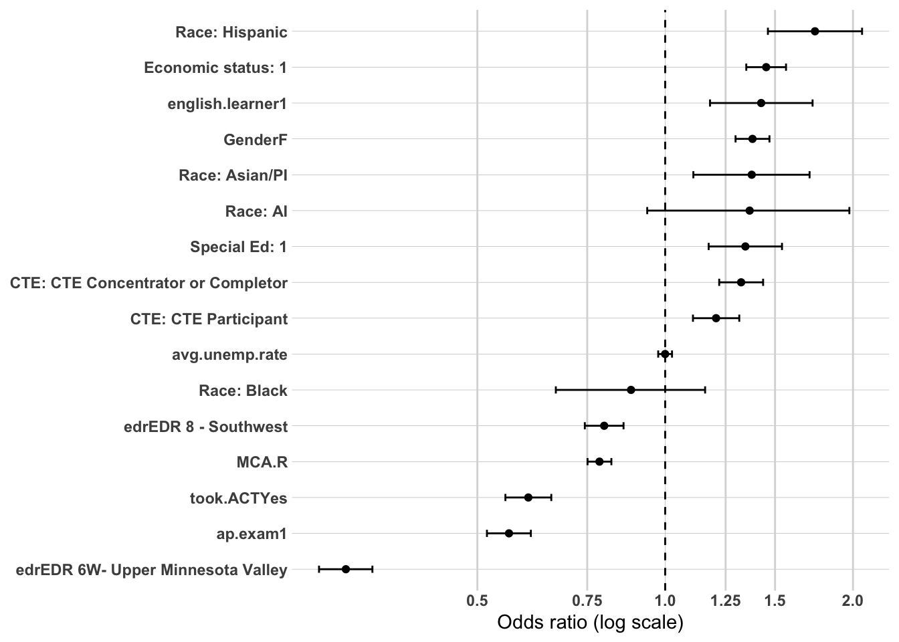
Summary of Multivariate Confirmation Analysis
Three hierarchical logistic regression models were estimated to examine the independent and cumulative associations of demographic characteristics, high school characteristics and local labor market conditions, and high school accomplishments with regional postsecondary graduation among college completers (N=22,069). Each successive model added a theoretically motivated block of variables, allowing assessment of whether each block contributed independent explanatory power beyond previous blocks and how earlier coefficients changed with the addition of new variables.
Model Fit Progression
Model fit improved across all three specifications, with the largest improvement occurring with the addition of geographic variables in Model 2 — a reversal from the other two postsecondary analyses where Block 3 produced the largest improvement. This confirms that graduation location is uniquely shaped by geographic context in ways that postsecondary graduation and credential level are not, and that high school accomplishments play a relatively smaller role in determining where completers graduate than in determining whether they graduate or what credential they attain.
Model
Variables Added
AIC
Δ AIC
Nagelkerke R²
1
Demographics
26,200
—
0.050
2
+ HS Characteristics and Labor Market
25,698
-501.67
0.081
3
+ HS Accomplishments
24,929
-769.17
0.127
Key Findings Across Models
The most defining feature of this analysis is the consistent reversal of demographic associations relative to the credential level models. Every significant demographic predictor associated with lower credential attainment — economic disadvantage, special education status, English learner status, and Hispanic race/ethnicity — shows significantly higher odds of regional graduation across all three models. This reversal is not a statistical artifact but a substantively meaningful confirmation of the two-pathway structure identified throughout the analysis. Demographic disadvantage is associated with sub-baccalaureate credential attainment at regional institutions, and the regional graduation location analysis confirms the geographic dimension of this sorting — disadvantaged completers are not merely attaining shorter credentials but are doing so at institutions within the Southwest Minnesota region, making them the most likely group to contribute to the regional workforce.
Special education status shows the most dramatic attenuation across the three models (OR from 2.118 to 1.345), confirming that much of the special education regional graduation advantage is explained by lower academic achievement and higher CTE engagement among special education completers. However the persistent positive association after all controls indicates an independent regional anchoring effect of special education status that goes beyond academic preparation. Economic status and English learner status show similar patterns of attenuation with persistent independent effects, while Hispanic completers show minimal attenuation across all three models — confirming that the Hispanic regional graduation advantage reflects community ties and geographic constraints that operate largely independently of academic preparation and CTE engagement.
Geographic variables produce the largest single block improvement in model fit observed at the Block 2 stage across any of the three postsecondary analyses (ΔAIC=-501.67), confirming that EDR is the dominant contextual predictor of graduation location. The EDR 6W Upper Minnesota Valley finding is the most substantively important geographic result in the entire analysis — completers from this subregion show odds of regional graduation less than 31% those of EDR 6E Southwest Central completers in the fully specified model, a dramatic difference that persists with minimal attenuation across all three models and is not explained by demographic composition or academic preparation. This finding points directly to a regional postsecondary infrastructure gap in EDR 6W that has significant implications for workforce development planning in that subregion. EDR 8 Southwest also shows consistently lower regional graduation odds than EDR 6E, though the association is considerably weaker.
High school accomplishment variables show the expected directional pattern but with smaller effect sizes than observed for the other two postsecondary outcomes. ACT participation (OR=0.603) and AP exam participation (OR=0.562) are the strongest negative predictors of regional graduation, while CTE engagement shows a positive dose-response relationship with CTE Concentrators or Completors (OR=1.324) showing the strongest regional anchoring effect. MCA Reading (OR=0.785) adds independent negative explanatory power beyond the college preparedness behavior variables. Average unemployment rate attenuates to non-significance in Model 3, confirming that its Model 2 association was largely attributable to correlation with academic preparation rather than an independent effect on graduation location.
Overall Conclusions
The three-model hierarchical analysis confirms that regional postsecondary graduation is shaped by a distinct combination of factors that differentiates it from the other postsecondary outcomes examined. Geographic infrastructure — particularly the availability and accessibility of regional postsecondary institutions across Southwest Minnesota subregions — is the dominant contextual predictor of graduation location and cannot be explained away by demographic composition or academic preparation. Demographic disadvantage is consistently and strongly associated with regional graduation, confirming the role of financial constraints, community ties, and geographic limitations in anchoring disadvantaged completers to regional institutions. High school accomplishments contribute meaningful but relatively smaller explanatory power compared to the other postsecondary outcomes, with CTE engagement showing consistent regional anchoring effects and academic achievement indicators showing consistent geographic mobility effects.
Taken together with the credential level analysis, these findings paint a coherent and policy-relevant picture — the same demographic and high school preparation factors that predict sub-baccalaureate credential attainment also predict regional graduation, and the same factors that predict bachelor degree or higher attainment also predict non-regional graduation. The two-pathway structure is not merely a credential-level phenomenon but a fully integrated sorting system that determines both what credentials completers earn and where they earn them, with direct and compounding consequences for regional workforce composition. The EDR 6W infrastructure gap represents the most actionable finding for regional policy — expanding regional postsecondary access in that subregion could meaningfully disrupt the geographic sorting mechanism and improve regional workforce retention outcomes for a subregion currently losing a disproportionate share of its completers to non-regional institutions.
Overall Summary of Postsecondary Multivariate Confirmation Analysis
Three sets of hierarchical logistic regression models were estimated to examine the independent and cumulative associations of demographic characteristics, high school characteristics and local labor market conditions, and high school accomplishments with three postsecondary pathway outcomes — postsecondary graduation (N=38,754), highest credential level among college completers (N=22,140), and postsecondary graduation location among college completers (N=22,069). Together these analyses provide multivariate confirmation of the postsecondary sorting mechanisms identified in the descriptive analysis and establish the individual-level predictors that shape the two distinct postsecondary pathways operating in Southwest Minnesota.
Model Fit Across All Three Analyses
High school accomplishment variables dominated the prediction of postsecondary graduation and credential level, producing by far the largest single block improvements in model fit for both outcomes. Geographic variables dominated the prediction of graduation location, producing the largest Block 2 improvement observed across any of the three analyses. This differential pattern confirms that the three postsecondary outcomes are shaped by meaningfully different combinations of predictors — academic preparation drives who completes postsecondary and what credential they attain, while geographic infrastructure drives where they complete it.
Outcome
Block 1 R²
Block 2 R²
Block 3 R²
Largest Predictor
PS Graduation
0.195
0.199
0.283
took.ACT (OR=2.887)
Credential Level
0.111
0.116
0.317
took.ACT (OR=5.191)
Graduation Location
0.050
0.081
0.127
EDR 6W (OR=0.308)
Who Goes to College and Who Completes
The postsecondary graduation analysis confirms that access to and completion of postsecondary education in Southwest Minnesota is powerfully shaped by both demographic characteristics and high school preparation. Economic disadvantage and special education status are the largest demographic barriers to completion, each showing odds ratios below 0.40 in the baseline model that attenuate but remain large and significant after all controls. AI and Hispanic graduates show the most persistent racial and ethnic disparities in graduation, with AI graduates showing odds of completion less than one third those of White graduates even in the fully specified model. ACT participation is the single most powerful predictor of postsecondary graduation (OR=2.887), followed by AP exam participation (OR=1.938) and MCA Reading score (OR=1.238). CTE engagement shows minimal independent association with postsecondary graduation once academic preparation is controlled, confirming that CTE engagement does not prevent postsecondary completion but strongly shapes the type of credential pursued.
The critical policy tension embedded in these findings is that the same variables most strongly associated with postsecondary graduation — ACT participation, AP exam, and high MCA Reading scores — are the same variables most strongly associated with non-regional employment in the workforce participation analysis. Strengthening academic preparation to improve postsecondary graduation rates will simultaneously accelerate the sorting of graduates toward non-regional employment pathways, a tension that cannot be resolved by focusing on either outcome alone.
What Credentials Completers Earn
The credential level analysis confirms that among those who complete postsecondary education the sorting into sub-baccalaureate versus bachelor degree or higher pathways is even more powerfully shaped by high school preparation than the decision to attend and complete postsecondary at all. ACT participation produces the largest single odds ratio observed across the entire postsecondary multivariate analysis (OR=5.191), reflecting the near-complete sorting of ACT takers into bachelor degree or higher pathways among completers. CTE engagement shows a strong and significant inverse dose-response relationship with credential level that was not observed for postsecondary graduation — confirming that CTE engagement leads to sub-baccalaureate completion rather than preventing postsecondary completion entirely.
The demographic pattern for credential level mirrors but amplifies the graduation pattern, with economic disadvantage, special education status, and English learner status all showing strong negative associations with bachelor degree attainment that attenuate but persist after academic controls. The most distinctive finding in this analysis is the consistently positive and strengthening association between Black completer status and bachelor degree attainment — reaching OR=1.726 after all controls — suggesting a selectivity effect in which Black students who successfully navigate the substantial barriers to postsecondary completion are disproportionately concentrated in bachelor degree or higher pathways. This finding warrants further investigation and targeted policy attention to understand the mechanisms driving this pattern.
Where Completers Graduate
The graduation location analysis reveals a distinctive and policy-relevant pattern that differentiates it from the other two postsecondary outcomes. Demographic associations consistently reverse direction relative to the credential level models — the groups least likely to attain higher credentials are the groups most likely to graduate from regional institutions. Economic disadvantage, special education status, English learner status, and Hispanic race/ethnicity all show significantly higher odds of regional graduation across all three models, confirming that regional postsecondary institutions serve a disproportionate share of Southwest Minnesota’s most disadvantaged completers.
Geographic infrastructure is the dominant contextual predictor of graduation location, with EDR 6W Upper Minnesota Valley showing the largest and most persistent association of any contextual variable across the entire postsecondary multivariate analysis — completers from EDR 6W show odds of regional graduation less than 31% those of EDR 6E Southwest Central completers in the fully specified model. This finding points to a critical regional postsecondary infrastructure gap in EDR 6W that has direct implications for workforce development planning and represents the most actionable geographic finding in the entire analysis.
The Two Pathways Confirmed
Taken together the three postsecondary multivariate analyses provide definitive confirmation of the two-pathway structure identified in the descriptive analysis.
The academic pathway is characterized by ACT participation, AP exam, PSEO, and high MCA Reading scores. It leads through postsecondary attendance and graduation to bachelor degree or higher credentials at non-regional institutions — either elsewhere in Minnesota or out of state — and ultimately to employment outside the Southwest Minnesota region. Every stage of this pathway is predicted by the same cluster of academic preparation indicators, and the sorting is cumulative — each stage reinforces and amplifies the sorting that occurred at previous stages.
The CTE pathway is characterized by CTE engagement, lower academic achievement indicators, economic disadvantage, special education status, English learner status, and male gender. It leads either to direct workforce entry without postsecondary or to sub-baccalaureate credentials at regional public 2-year institutions and ultimately to employment within the Southwest Minnesota region. As with the academic pathway the sorting is cumulative — CTE engagement predicts sub-baccalaureate completion, which predicts regional graduation, which predicts regional workforce retention.
These two pathways are not hierarchical in value. They serve fundamentally different but equally essential workforce functions in Southwest Minnesota, and both are necessary for a healthy regional economy. However they are strikingly distinct in who follows them and where they lead, and the multivariate confirmation analyses establish that this sorting begins in high school — in the courses students take, the tests they sit for, and the academic skills they develop — long before any postsecondary decision is made. This has profound implications for regional education and workforce development policy, suggesting that interventions must begin well before the postsecondary stage to meaningfully alter the pathway sorting that ultimately determines regional workforce composition.
The Emerging Story: Education, Place, and Workforce Retention in Southwest Minnesota
The combined findings of the workforce participation and postsecondary multivariate analyses tell a coherent and compelling story about how Southwest Minnesota high school graduates move — or do not move — into the regional workforce. It is a story about sorting. From the moment students walk into a high school classroom, forces are already at work determining not just whether they will go to college, but what kind of college, where, and ultimately where they will work a decade later. That sorting process is the central finding of this analysis, and understanding it is essential to designing effective regional education and workforce development policy.
The Sorting Begins in High School
The clearest and most consistent finding across every analysis in this study is that what students do in high school is the single most powerful predictor of their long-term workforce location. Two distinct clusters of high school engagement predict two fundamentally different life trajectories.
Students who take the ACT, participate in AP courses, and score high on MCA Reading are systematically sorted toward postsecondary graduation, higher credentials, and non-regional employment. These are not independent effects — they are stages of a single cumulative process. ACT participation is the strongest predictor of postsecondary graduation (OR=2.887), the strongest predictor of bachelor degree attainment among completers (OR=5.191), and a significant predictor of non-regional employment (OR=0.837). The same student who takes the ACT in eleventh grade is more likely to graduate from a four-year institution in Minneapolis or out of state, and more likely to be working outside Southwest Minnesota five years after high school. The sorting is not random — it is systematic, cumulative, and begins years before any postsecondary decision is made.
Students who engage deeply in CTE — particularly those who reach Concentrator or Completor status — follow an equally systematic but fundamentally different trajectory. CTE engagement is the strongest positive predictor of regional workforce retention (OR=1.572 for Concentrators or Completors), is associated with sub-baccalaureate credential attainment among completers, and is associated with regional postsecondary graduation. The CTE student who completes a technical program in high school is more likely to graduate from Minnesota West or a similar regional institution, earn a certificate or associate degree, and be working in Southwest Minnesota five years later. This is not a lesser outcome — it is a different outcome, and one that is essential to the regional economy.
Postsecondary Geography Is the Critical Hinge
If high school preparation sets the trajectory, where students complete their postsecondary education is the critical hinge that determines whether they return to or remain in the regional workforce. The workforce participation analysis makes this point with unusual clarity — graduating from a regional institution is the single strongest postsecondary predictor of regional employment regardless of credential level. Sub- baccalaureate graduates from regional institutions show odds of regional employment more than twice those of non-graduates (OR=2.086), and bachelor degree or higher graduates from regional institutions show similarly elevated odds (OR=1.914). By contrast, bachelor degree graduates from elsewhere in Minnesota show odds of regional employment below those of non-graduates (OR=0.652) — the act of completing a degree outside the region is itself a powerful predictor of permanent departure.
This finding reframes the policy conversation in an important way. The question is not simply whether students go to college — it is where they go and whether they come back. A student who attends Southwest Minnesota State University and earns a bachelor degree is nearly twice as likely to be working in the region five years later as a student who did not complete postsecondary at all. A student who earns the same degree from the University of Minnesota is significantly less likely to return. Regional institutions are not merely educational providers — they are workforce retention infrastructure.
The EDR 6W Gap
The graduation location analysis reveals a geographic dimension to this story that deserves particular attention. Completers from EDR 6W Upper Minnesota Valley show odds of regional graduation less than 31% those of EDR 6E Southwest Central completers even after controlling for every individual-level characteristic in the model. This is not a demographic story — it persists after controlling for economic status, race/ethnicity, academic preparation, and CTE engagement. It is a infrastructure story. EDR 6W has weaker regional postsecondary infrastructure than EDR 6E, and as a result its completers are far more likely to leave the region for postsecondary education — and far less likely to return. The workforce development implications of this gap are substantial and extend well beyond the postsecondary stage.
Demographic Disadvantage Cuts Both Ways
One of the most nuanced and counterintuitive findings in this analysis is the relationship between demographic disadvantage and regional workforce retention. The groups that face the greatest barriers to postsecondary access and credential attainment — economically disadvantaged students, special education students, English learners, and Hispanic students — are precisely the groups most likely to graduate from regional institutions and most likely to remain in the regional workforce. This is not because disadvantage is beneficial. It is because the same financial constraints, community ties, and geographic limitations that make postsecondary access difficult also anchor these students to the region when they do complete. The regional economy depends heavily on this group — they are disproportionately concentrated in the sub-baccalaureate to regional institution to regional workforce pipeline that the analysis consistently identifies as the strongest driver of regional workforce retention.
The policy implication is uncomfortable but important. Improving postsecondary access for disadvantaged students — a widely shared and legitimate goal — may paradoxically reduce regional workforce retention if those students are sorted toward non-regional institutions through the academic pathway. Expanding access without attending to where students complete and what pathway they follow risks accelerating the departure of the very students the regional economy most depends on. This does not argue against improving access — it argues for attending carefully to the full pathway, not just the first step.
Racial and Ethnic Disparities Remain Unexplained
The most sobering finding across the entire analysis is the persistence of racial and ethnic disparities in regional workforce retention that survive every control introduced in the multivariate models. Black, AI, and Asian/PI graduates show significantly lower odds of regional employment across all four workforce participation models, with coefficients that remain remarkably stable from the demographic baseline through the fully specified model including postsecondary pathway. These disparities are not explained by academic preparation, CTE engagement, economic status, or postsecondary pathway — they persist after all of these are controlled.
This finding does not have a simple explanation within the data available for this analysis. It may reflect discrimination in regional labor markets, the concentration of minority graduates in industries or occupations not well represented in the regional economy, network and social capital differences that affect job access, or differential return migration patterns that the data cannot capture. What the data do establish clearly is that the regional workforce retention gap for minority graduates is real, large, and not reducible to differences in educational preparation or pathway. It demands targeted attention that goes beyond the educational interventions this analysis is best positioned to inform.
What This Means for Policy
The story that emerges from this analysis is not a simple one, and it resists simple policy prescriptions. Strengthening academic preparation improves postsecondary graduation but accelerates geographic departure. Expanding postsecondary access improves equity but may reduce retention if pathway and location are not attended to. Investing in CTE improves regional retention but does not address the credential attainment needs of a changing regional economy. No single lever moves all of these outcomes in the same direction simultaneously.
What the analysis does suggest with clarity is that regional workforce retention is best understood as a system — a sequential sorting process that begins in high school, runs through postsecondary pathway selection and completion, and culminates in workforce location. Interventions that target only one stage of this system without attending to the others are unlikely to produce durable change. The most promising opportunities identified by this analysis are strengthening regional postsecondary infrastructure — particularly in EDR 6W — expanding access to high-quality CTE programming that leads to credentials valued by regional employers, and developing targeted strategies to improve regional workforce retention for minority graduates that address barriers beyond the educational pathway. Together these represent a coherent and evidence-based regional workforce development agenda grounded in the actual sorting mechanisms that determine who stays and who leaves Southwest Minnesota.